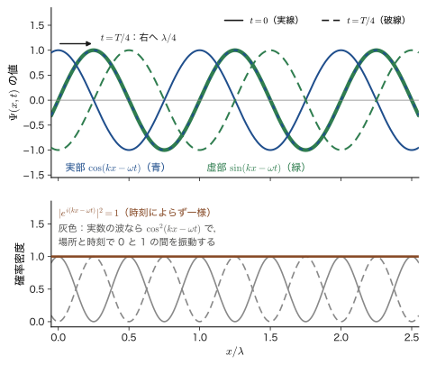
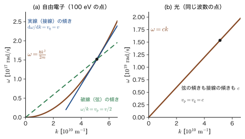
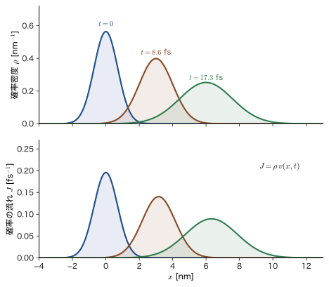
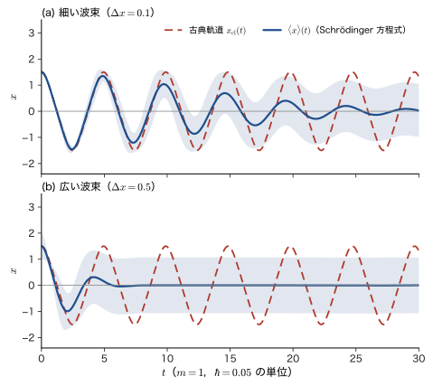
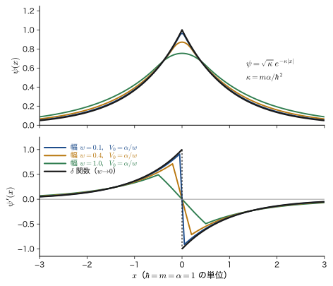

第9章Schrödinger 方程式 — 波動関数と演算子
第II部で私たちは，実験の事実をたどって量子力学の入口まで来た．光は粒子（光子）として振る舞い，電子は波として振る舞う．電子の波を表す関数を波動関数（wave function）$\psi$ とよぶ．$\abs{\psi}^2$ が電子の見いだされる確率密度であること（Born（ボルン）の確率解釈）と，位置と運動量の間に交換関係 $\comm{\hat{x}}{\hat{p}}=i\hbar$ が成り立つことを，私たちは公理として受け入れた（第8章）．ところが，まだ一番大事なものが欠けている．波動関数 $\psi$ そのものを，どうやって求めるのか．Newton（ニュートン）の運動方程式 $m\ddot{x}=F$ が古典的な粒子の軌道を決めたように，電子の波動関数を決める方程式が必要である．それが，Schrödinger（シュレーディンガー）方程式である．
この章では，実験で確かめられた $p=h/\lambda$，$E=h\nu$ から出発して，電子の平面波が満たすべき方程式を作り（9.1 節），方程式に現れる演算子と固有値問題の考え方を学ぶ（9.2 節）．そのうえで，方程式から必ず出てくる 2 つの結果，確率の保存則（9.3 節）と Ehrenfest（エーレンフェスト）の定理（9.4 節）を，式変形を一行も飛ばさずに導く．最後に，定常状態と重ね合わせ（9.5 節），波動関数の条件と Hermite（エルミート）演算子（9.6 節）を整理する．
古典力学との違いを先に見ておこう．古典力学では，ある時刻の位置と速度（2 つの数）を与えれば，その後の軌道がただ 1 つに決まる．Schrödinger 方程式では，ある時刻の波動関数 $\Psi(x,0)$（1 つの関数）を与えれば，その後の波動関数 $\Psi(x,t)$ がただ 1 つに決まる．方程式は時間について 1 階で，$i$ を含み，解は複素数になる．確率が現れるのは波動関数の時間発展の段階ではなく，波動関数から測定の結果を読み取る段階である．この決定論的な部分（Schrödinger 方程式）と確率的な部分（Born の規則）の組み合わせが，量子力学の骨組みである．
- 第9章（本章）：Schrödinger 方程式を作り，演算子・確率の保存則・Ehrenfest の定理・定常状態を学ぶ．第II部の実験事実と第III部の計算をつなぐ章である．
- 第10章 無限井戸型ポテンシャル：もっとも簡単な束縛状態．壁で $\psi=0$ という境界条件からエネルギーがとびとびになる．Dirac 記法もここで導入する．
- 第11章 有限井戸型ポテンシャル：壁が有限の高さだと，波動関数は壁の中にしみ出す（本章 9.6 節の接続条件を使う）．
- 第12章 トンネル効果：エネルギーが足りないはずの壁を粒子が通り抜ける．反射率・透過率は本章の確率の流れ $J$（9.3 節）で定義する．
- 第13章 調和振動子：ばねの振動の量子版．分子の振動や結晶の格子振動の基礎になる．
- 第14章 3 次元の Schrödinger 方程式：変数分離と球対称ポテンシャル．本章 9.2 節の球座標の $\hat{\bm{p}}$ がここで働く．
- 第15・16・17章 水素原子：原子の軌道の形，エネルギー準位，電子の存在確率．
- 第18章 遮蔽と浸透：水素様イオンから多電子原子へ．
- 第19章 分子の振動・第20章 Morse ポテンシャル：調和振動子の応用と，結合の切れる非調和な振動．
- $p=h/\lambda$，$E=h\nu$ を平面波 $e^{i(kx-\omega t)}$ に結びつけて，自由粒子の Schrödinger 方程式を導き，これが「導出」ではなく公理であることを説明できること
- 演算子（$\hat{x}$，$\hat{p}$，$\hat{E}$，$\hat{H}$）と固有値方程式の意味，交換子 $\comm{\hat{x}}{\hat{p}}f=i\hbar f$ を試験関数を使って計算できること
- 確率の保存則 $\partial\rho/\partial t=-\nabla\cdot\bm{J}$ を導き，$\bm{J}=(\hbar/m)\Imag(\psi^*\nabla\psi)=\rho\,\nabla S/m$ が「確率密度 × 速度」であることを説明できること
- Ehrenfest の定理 $\dd\langle x\rangle/\dd t=\langle p\rangle/m$，$\dd\langle p\rangle/\dd t=-\langle V'\rangle$ を部分積分で導き，波束が古典的に振る舞う条件を述べられること
- 変数分離で時間に依存しない方程式 $\hat{H}\psi=E\psi$ を導き，重ね合わせ $\Psi=\sum_nc_n\psi_ne^{-iE_nt/\hbar}$ で時間変化を書けること
- 波動関数が満たすべき条件と接続条件（$V$ が有限なら $\psi,\psi'$ が連続，$\delta$ 型なら $\psi'$ が跳ぶ）を導き，Hermite 演算子の固有値が実数で固有関数が直交することを証明できること
- 本書の前の章：光子と電子の運動量・波長（第4章 4.4，第6章 6.2，6.3），Born の確率解釈・期待値・交換関係（第8章）．
- 数学（大学数学）：Euler の公式（第21章 21.4），円柱座標・球座標のナブラ（第16章 16.2，16.5），期待値（第14章 14.4），行列の固有値問題（第12章 12.1），関数の内積（第27章 27.2）．
- 物理（大学基礎物理学）：波の位相速度（第11章 11.4），群速度（第17章 17.5），電荷の保存則（第37章 37.2），Hamilton の正準方程式（第45章 45.2）．
もとにしたノート：望月泰英『物理学ノート 量子力学2』 pp. 1–5，および Ehrenfest の定理を書いた別紙．
9.1 物質波から Schrödinger 方程式へ
9.1.1 第II部のふりかえり — 波の式に方程式がほしい
第II部の実験事実を一言でまとめると，光にも電子にも，粒子としての顔（エネルギー $E$・運動量 $p$）と波としての顔（振動数 $\nu$・波長 $\lambda$）があり，両者は Planck 定数 $h$ で $E=h\nu$，$p=h/\lambda$ とつながっている，ということだった（光子について第4章 4.4 節，電子の波長の求め方と数値例は第6章 6.3 節と例題9.1）．de Broglie の提唱した $p=h/\lambda$ は，電子回折の実験で確かめられている（第6章 6.2 節，6.5 節）．
これで，自由に飛んでいる電子については，波長 $\lambda$ と振動数 $\nu$ がわかった．しかし本当に知りたいのは，原子の中や結晶の中，あるいは井戸の中の電子である．そこでは電子は力（ポテンシャル $V$）を受けていて，波の波長は場所によって変わる．こうした場合の波動関数 $\Psi(x,t)$ を決める，ただ 1 つの方程式はないだろうか．次の 9.1.2 節では，実験で確かめられた関係 $p=h/\lambda$，$E=h\nu$ を平面波に代入して，この方程式を作ってみる．
9.1.2 平面波から出発する — Schrödinger 方程式の「導出」
最も単純な波は，1 つの波長 $\lambda$ と 1 つの振動数 $\nu$ をもつ平面波である．$x$ 軸の正の向きに進む波を，第1章・第6章で見たように複素数の指数関数で書く．
\begin{equation} \Psi(x,t)=A\exp\left[i\,2\pi\left(\frac{x}{\lambda}-\nu t\right)\right]=A\,e^{i(kx-\omega t)}\qquad\left(k=\frac{2\pi}{\lambda},\ \ \omega=2\pi\nu\right) \label{eq:9-plane} \end{equation}ここで $A$ は定数，$k$ は波数，$\omega$ は角振動数である．電子の運動が式 \eqref{eq:9-plane} で表せるとしよう．$p=h/\lambda$ と $h=2\pi\hbar$（$\hbar$ は「エイチバー」と読み，$h/2\pi$ を表す）から $p=\hbar k$，$E=h\nu=\hbar\omega$ である．つまり平面波 \eqref{eq:9-plane} は，運動量 $\hbar k$，エネルギー $\hbar\omega$ の電子の波である．
ここから先の議論の見通しを，図9.1 にまとめる．平面波を $x$ で 2 回微分すると $-k^2$ が，$t$ で 1 回微分すると $-i\omega$ が前に出る．$k$ と $\omega$ を運動量 $p$ とエネルギー $E$ に読み替えれば，微分の式が $p$ と $E$ の式になる．エネルギー保存の式 $E=p^2/2m+V$ でそれらをつなげば，方程式が出来上がる．

導出：平面波から Schrödinger 方程式を作る
[i] $x$ で 2 回微分する．式 \eqref{eq:9-plane} の指数の中の $x$ の係数は $i\,2\pi/\lambda$ なので，$x$ で 1 回微分すると $\Psi$ に $i\,2\pi/\lambda$ がかかり，もう 1 回微分するとさらに $i\,2\pi/\lambda$ がかかる：
\begin{equation} \frac{\partial^2}{\partial x^2}\Psi(x,t)=\left(i\,\frac{2\pi}{\lambda}\right)^2\Psi(x,t)=-\frac{4\pi^2}{\lambda^2}\,\Psi(x,t) \label{eq:9-d2x} \end{equation}（$i^2=-1$）．
[ii] 波長 $\lambda$ を消す．ここでは $V$ が場所によらない定数の場合を考える（$V$ が $x$ とともに変わる場合は 9.1.3 節で扱う）．電子の全エネルギーは運動エネルギーとポテンシャルエネルギーの和 $E=\dfrac{p^2}{2m}+V$ で，運動量と波長は de Broglie の関係 $p=\dfrac{h}{\lambda}$ で結ばれる．これらから
$$ p=\sqrt{2m(E-V)}=\frac{h}{\lambda}\qquad\therefore\quad\lambda=\frac{h}{\sqrt{2m(E-V)}},\qquad \frac{1}{\lambda^2}=\frac{2m(E-V)}{h^2} $$である．最後の式を式 \eqref{eq:9-d2x} に代入すると，
$$ \frac{\partial^2}{\partial x^2}\Psi=-\frac{4\pi^2}{h^2}\cdot2m(E-V)\,\Psi $$となる．ここで $\hbar=\dfrac{h}{2\pi}$ より $\hbar^2=\dfrac{h^2}{4\pi^2}$，すなわち $\dfrac{4\pi^2}{h^2}=\dfrac{1}{\hbar^2}$ であるから，
$$ \frac{\partial^2}{\partial x^2}\Psi=-\frac{2m(E-V)}{\hbar^2}\,\Psi\qquad\text{整理して}\qquad-\frac{\hbar^2}{2m}\frac{\partial^2}{\partial x^2}\Psi=(E-V)\,\Psi $$となる．$V\Psi$ を左辺に移すと，
\begin{equation} -\frac{\hbar^2}{2m}\frac{\partial^2}{\partial x^2}\Psi+V\Psi=E\Psi \label{eq:9-A} \end{equation}を得る．
[iii] $t$ で微分する．式 \eqref{eq:9-plane} で $t$ の係数は $-i\,2\pi\nu$ なので，
\begin{equation} \frac{\partial}{\partial t}\Psi=-i\,2\pi\nu\,\Psi \label{eq:9-dt} \end{equation}である．電子を波として扱うとき，電子のエネルギーは $E=h\nu$，すなわち $\nu=E/h$ である．これを式 \eqref{eq:9-dt} に代入し，$\dfrac{2\pi}{h}=\dfrac{1}{\hbar}$ を使うと，
$$ \frac{\partial}{\partial t}\Psi=-i\,\frac{2\pi}{h}\,E\Psi=-\frac{i}{\hbar}\,E\Psi $$となる．両辺に $i\hbar$ をかけると（$i\cdot(-i)=1$），$i\hbar\dfrac{\partial}{\partial t}\Psi=E\Psi$，すなわち
\begin{equation} E\Psi=i\hbar\frac{\partial}{\partial t}\Psi\qquad\left(=-\frac{\hbar}{i}\frac{\partial}{\partial t}\Psi\right) \label{eq:9-Epsi} \end{equation}である（$1/i=-i$ より $-\hbar/i=i\hbar$）．
[iv] 2 つをつなぐ．[ii] で得た式 \eqref{eq:9-A}（$x$ の 2 階微分と $E$ の関係）の右辺の $E\Psi$ に，[iii] で得た式 \eqref{eq:9-Epsi}（$E\Psi$ と $t$ 微分の関係）を代入すると，
\begin{equation} -\frac{\hbar^2}{2m}\frac{\partial^2}{\partial x^2}\Psi(x,t)+V\,\Psi(x,t)=i\hbar\frac{\partial}{\partial t}\Psi(x,t) \label{eq:9-se1d} \end{equation}を得る．
[v] 3 次元へ．$x$ 方向の運動エネルギーの項 $-\dfrac{\hbar^2}{2m}\dfrac{\partial^2}{\partial x^2}$ を，$y$，$z$ 方向にも加える（3 方向は対等なので，同じ形の項が並ぶ）．$\nabla^2=\dfrac{\partial^2}{\partial x^2}+\dfrac{\partial^2}{\partial y^2}+\dfrac{\partial^2}{\partial z^2}$（ラプラシアン）を使って，
\begin{equation} -\frac{\hbar^2}{2m}\nabla^2\Psi(x,y,z,t)+V\,\Psi(x,y,z,t)=i\hbar\frac{\partial}{\partial t}\Psi(x,y,z,t) \label{eq:9-se3d} \end{equation}となる．
（導出終わり）
式 \eqref{eq:9-se1d}，\eqref{eq:9-se3d} が Schrödinger 方程式（時間を含む Schrödinger 方程式）である．左辺の第 1 項が運動エネルギー，第 2 項がポテンシャルエネルギーに対応し，右辺の $i\hbar\,\partial/\partial t$ が全エネルギーに対応する．方程式全体は「運動エネルギー ＋ ポテンシャルエネルギー ＝ 全エネルギー」を波動関数に作用させた式になっている．
問い：$\Psi(x,t)$ は「電子の運動」なのか「確率密度」なのか？
ここで当然の疑問が生じる．Schrödinger 方程式の $\Psi(x,t)$ とは何なのか．電子の位置が時間とともに動く様子（「電子の運動」）を表す量なのか，それとも電子の見いだされる「確率密度」なのか．
答えは，そのどちらでもない．$\Psi$ は複素数の値をとる確率振幅であり，「電子の運動」を直接表すものでも，確率密度そのものでもない．その絶対値の 2 乗 $\abs{\Psi(x,t)}^2$ が，時刻 $t$ に電子が位置 $x$ の近くで見いだされる確率密度である（Born の確率解釈．第8章）．図9.2 のように，複素数の平面波では $\abs{\Psi}^2$ は一様で，「どこにいるか」の情報はなく，運動量が確定している．波動関数の位相の巻き方（$e^{ikx}$ の $k$）に運動量の情報が入っている．この問いには，9.6.1 節でもう一度答える．
9.1.3 この導出は何を示したのか — 推測と公理
前節の計算は，一見すると Schrödinger 方程式を「証明」したように見える．しかし正直に言えば，これは導出ではなく，もっともらしい推測である．理由は 2 つある．第 1 に，出発点の平面波 \eqref{eq:9-plane} は，$V$ が定数（力を受けない）のときの解にすぎない．$V$ が $x$ とともに変わると，波長 $\lambda=h/\sqrt{2m(E-V)}$ も場所ごとに変わるので，「$\Psi=A\exp i2\pi(x/\lambda-\nu t)$ の $\lambda$ は 1 つの定数」という前提が崩れる．前節の式 \eqref{eq:9-se1d} では，$V$ が $x$ の関数の場合にも同じ形の式が成り立つと仮定した．第 2 に，$p=h/\lambda$ も $E=h\nu$ も，平面波（1 つの $\lambda$，1 つの $\nu$）でしか意味をもたない．一般の波動関数は，いろいろな $\lambda$ と $\nu$ の波の重ね合わせである．
Schrödinger 方程式は，実際には次のように位置づけられる．方程式は，物質波の考え方を手がかりに 1926 年に Schrödinger が提出した．その正しさは，水素原子のエネルギー準位（第15章）をはじめとする無数の実験との一致によって確かめられている．したがって，Schrödinger 方程式は，Newton の運動方程式と同じく，他の原理から証明される定理ではなく，それ以上さかのぼれない出発点（公理）として受け入れる．第8章で，Born の確率解釈（公理8.1）と交換関係（公理8.4）に続く量子力学の第 3 の公理（公理8.5）として予告した時間発展の公理が，この方程式である．
公理8.5（再掲） Schrödinger 方程式（時間発展の公理）
質量 $m$ の粒子が，ポテンシャルエネルギー $V(\bm{r})$ の中で運動するとき，波動関数 $\Psi(\bm{r},t)$ の時間変化は，次の方程式にしたがう．
\begin{equation} i\hbar\frac{\partial}{\partial t}\Psi(\bm{r},t)=\left[-\frac{\hbar^2}{2m}\nabla^2+V(\bm{r})\right]\Psi(\bm{r},t) \label{eq:9-axiom} \end{equation}ある時刻の波動関数 $\Psi(\bm{r},0)$ を与えれば，それ以後の波動関数 $\Psi(\bm{r},t)$ は（方程式が時間について 1 階なので）ただ 1 つに決まる．
式 \eqref{eq:9-axiom} の右辺の角括弧は，運動エネルギーとポテンシャルエネルギーの和に対応する演算子（ハミルトニアン $\hat{H}$）で，次の 9.2 節で導入する．ここで，この方程式の 2 つの重要な性質を指摘しておく．
- 時間について 1 階：Newton の運動方程式は時間について 2 階で，位置と速度の 2 つの初期条件が必要だった．Schrödinger 方程式は 1 階なので，初期条件は波動関数 $\Psi(\bm{r},0)$ だけである．波動関数がすでに（$e^{ikx}$ の位相の中に）運動量の情報をもっているからである．
- 線形：$\Psi$ について 1 次の式（$\Psi^2$ などを含まない）なので，$\Psi_1$ と $\Psi_2$ が解なら，$c_1\Psi_1+c_2\Psi_2$（$c_1,c_2$ は複素数の定数）も解である（重ね合わせの原理）．実際，方程式に代入して，微分の線形性から左辺 $=c_1(\text{左辺}_1)+c_2(\text{左辺}_2)=c_1(\text{右辺}_1)+c_2(\text{右辺}_2)=$ 右辺 となる．干渉，量子ビート，バンド構造など，量子力学の不思議さの多くはこの性質に由来する（9.5 節）．
9.1.4 自由粒子の平面波 — 分散関係・位相速度・群速度
力の働かない粒子（$V=0$）の Schrödinger 方程式 $i\hbar\,\partial\Psi/\partial t=-\dfrac{\hbar^2}{2m}\partial^2\Psi/\partial x^2$ に，平面波 \eqref{eq:9-plane} を代入して，$\omega$ と $k$ の関係を確かめよう．
導出：自由粒子の分散関係
$\Psi=A\,e^{i(kx-\omega t)}$ を微分すると $\dfrac{\partial\Psi}{\partial t}=-i\omega\Psi$，$\dfrac{\partial^2\Psi}{\partial x^2}=(ik)^2\Psi=-k^2\Psi$ である．左辺は $i\hbar(-i\omega)\Psi=\hbar\omega\Psi$（$i\cdot(-i)=1$），右辺は $-\dfrac{\hbar^2}{2m}(-k^2)\Psi=\dfrac{\hbar^2k^2}{2m}\Psi$ となる．両辺の $\Psi$ の係数を等しいとおいて，
$$ \hbar\omega=\frac{\hbar^2k^2}{2m}\qquad\therefore\quad\omega=\frac{\hbar k^2}{2m} $$を得る．$p=\hbar k$，$E=\hbar\omega$ を代入すると $E=p^2/2m$ で，古典的な自由粒子の運動エネルギーの式と一致する．
（導出終わり）
この関係を分散関係（dispersion relation）という．
\begin{equation} \omega(k)=\frac{\hbar k^2}{2m}\qquad\left(E=\frac{p^2}{2m}\right) \label{eq:9-disp} \end{equation}光（真空中の電磁波）の分散関係は $\omega=ck$ の直線であったのに対し，物質波では $k$ の 2 次関数（放物線）になる（図9.3）．波の速さには 2 種類あった（大学基礎物理学 第11章 11.4，第17章 17.5）．位相の進む速さ（位相速度）と，波束の中心の進む速さ（群速度）である．式 \eqref{eq:9-disp} から，
\begin{equation} v_{\mathrm p}=\frac{\omega}{k}=\frac{\hbar k}{2m}=\frac{p}{2m}=\frac{v}{2},\qquad v_{\mathrm g}=\frac{\dd\omega}{\dd k}=\frac{\hbar k}{m}=\frac{p}{m}=v \label{eq:9-vpvg} \end{equation}を得る．ただし $v=p/m$ は古典的な粒子の速さである．波束の中心（群速度）は粒子と同じ速さ $v$ で進み，位相はその半分の速さ $v/2$ で進む．ちょうど $v_{\mathrm p}=v_{\mathrm g}/2$ となる理由は，放物線 $\omega\propto k^2$ では，原点と曲線上の点を結ぶ弦の傾き（$\omega/k$）が，その点での接線の傾き（$\dd\omega/\dd k$）のちょうど半分だからである（図9.3）．一方，光（$\omega=ck$）では弦も接線も傾きは $c$ で，$v_{\mathrm p}=v_{\mathrm g}=c$ である．

注意：位相速度が粒子の速さの半分になることを気にしなくてよい理由
「粒子が速さ $v$ で動くのに，波の山は $v/2$ でしか進まない」ことが気になるかもしれない．しかし物理的に意味をもつのは，エネルギーや確率が運ばれる速さ，すなわち群速度 $v_{\mathrm g}=v$ である．位相速度は単独の平面波の位相の進みであって，測定にかかる量ではない．実際，エネルギーの原点は任意で（9.5.2 節），$E$ を定数 $E_0$ だけずらしても物理は変わらない．しかし $\omega=E/\hbar$ は $\omega+E_0/\hbar$ に変わるので，位相速度 $\omega/k$ は変わってしまう．一方 $\dd\omega/\dd k$ は変わらない．物理的な速さを決めるのは，原点のとり方によらない群速度である．
Schrödinger 方程式が線形であることから，平面波の重ね合わせ $\Psi(x,t)=\displaystyle\int A(k)\,e^{i[kx-\omega(k)t]}\dd k$ もまた解になる．$A(k)$ が $k_0$ の近くだけで大きい山型の関数のとき，これは $x$ 方向に局在した波束（wave packet）を表し，その中心は群速度 $\dd\omega/\dd k|_{k_0}=\hbar k_0/m$ で動く．ただし，$\omega$ が $k$ に比例しない（分散がある）ので，波束を作る平面波の成分は少しずつ違う位相速度で進み，波束は時間とともに広がる（9.3.4 節の図9.6）．
9.1.5 なぜ複素数なのか，そして波動関数の次元
Schrödinger 方程式は $i$ を含むので，その解は複素数になる．第1章では，実数の波 $\cos(kx-\omega t)$ を自由粒子の方程式に代入すると，左辺が虚数，右辺が実数になって等しくなりようがない，という理由を見た．もう少し詳しく見ておこう．$\Psi=u+iv$（$u,v$ は実数の関数）とおき，$V$ が実数であるとして式 \eqref{eq:9-se1d} に代入すると，左辺は $i\hbar(\partial_tu+i\,\partial_tv)=-\hbar\,\partial_tv+i\hbar\,\partial_tu$（$\partial_t=\partial/\partial t$）となる．実部と虚部を別々に等しいとおくと，
$$ -\hbar\frac{\partial v}{\partial t}=-\frac{\hbar^2}{2m}\frac{\partial^2u}{\partial x^2}+Vu,\qquad \hbar\frac{\partial u}{\partial t}=-\frac{\hbar^2}{2m}\frac{\partial^2v}{\partial x^2}+Vv $$という，$u$ と $v$ が絡み合った 2 本の実数の方程式になる．第 1 式は「$v$ の時間変化が $u$ の形で決まる」，第 2 式は「$u$ の時間変化が $v$ の形で決まる」という意味で，実部と虚部が互いに他方を追いかけて，位相をずらしながら時間発展する．平面波では，$u=\cos(kx-\omega t)$，$v=\sin(kx-\omega t)$ がこの追いかけっこの解である（図9.2 の青と緑）．$v=0$（実数の波）とおくと第 2 式から $\hbar\,\partial u/\partial t=0$ となり，時間変化のない波しか許されない．波の進行（時間変化）には，実部と虚部の両方が必要である．
イメージ：複素数の波は「回転する矢印」
複素数 $e^{i(kx-\omega t)}$ は，複素平面の単位円上の点で，$x$ が増えると反時計回りに角 $kx$ だけ回り，時間が進むと時計回りに角 $\omega t$ だけ戻る．位置ごとに 1 本の矢印（長さ $\abs{A}$）が生えていて，矢印の向きだけが波のように変わっていく（第1章の図1.5 のらせん）．矢印の長さ $\abs{\Psi}$ が確率密度 $\abs{\Psi}^2$ を決め，向きの変わり方（位相）が運動量を決める．実数の波では，位相の情報を持たせる余地がなく，「進む」ことを表せない．
最後に，波動関数の次元を確認しておく．$\abs{\Psi}^2$ は確率密度なので，1 次元では $\int\abs{\Psi}^2\dd x=1$（無次元）より $\abs{\Psi}^2$ の次元は $[\text{長さ}]^{-1}$，すなわち $\Psi$ の次元は $[\text{長さ}]^{-1/2}$ である．3 次元では $\int\abs{\Psi}^2\dd^3r=1$ より $[\text{長さ}]^{-3/2}$ である．方程式 \eqref{eq:9-se1d} の各項がすべてエネルギー $\times\Psi$ の次元をもつことも確かめられる．$i\hbar\,\partial\Psi/\partial t$ は $[\mathrm{J\,s}]/[\mathrm{s}]=[\mathrm{J}]$ に $\Psi$ がかかったもの，$\dfrac{\hbar^2}{2m}\dfrac{\partial^2\Psi}{\partial x^2}$ は，係数の次元が $\dfrac{[\mathrm{J\,s}]^2}{[\mathrm{kg}]\,[\mathrm{m}]^2}=\dfrac{[\mathrm{kg\,m^2/s}]^2}{[\mathrm{kg\,m^2}]}=[\mathrm{kg\,m^2/s^2}]=[\mathrm{J}]$ となって，やはり $[\mathrm{J}]$ に $\Psi$ がかかったものである（$\mathrm{J\,s}=\mathrm{kg\,m^2/s}$）．
例題9.1 運動エネルギー $100\ \mathrm{eV}$ の電子の平面波
運動エネルギー $100\ \mathrm{eV}$ の電子の平面波 $\Psi=A\,e^{i(kx-\omega t)}$ について，運動量 $p$，波数 $k$，波長 $\lambda$，角振動数 $\omega$，振動数 $\nu$，粒子の速さ $v$，位相速度 $v_{\mathrm p}$，群速度 $v_{\mathrm g}$ を求めよ．
解答 $E=100\ \mathrm{eV}=100\times1.602\,177\times10^{-19}\ \mathrm{J}=1.602\,177\times10^{-17}\ \mathrm{J}$．電子の質量は $m=9.109\,384\times10^{-31}\ \mathrm{kg}$．運動量は $E=p^2/2m$ より
$$ p=\sqrt{2mE}=\sqrt{2\times9.109\,384\times10^{-31}\times1.602\,177\times10^{-17}}\ \mathrm{kg\,m/s}=\sqrt{2.9190\times10^{-47}}=5.403\times10^{-24}\ \mathrm{kg\,m/s} $$である．$\hbar=1.054\,572\times10^{-34}\ \mathrm{J\,s}$ を使って，波数は $k=p/\hbar=5.403\times10^{-24}/1.054\,572\times10^{-34}=5.123\times10^{10}\ \mathrm{m^{-1}}$，波長は $\lambda=2\pi/k=1.226\times10^{-10}\ \mathrm{m}=0.1226\ \mathrm{nm}$ で，第6章の値と一致する．角振動数は $\omega=E/\hbar=1.602\,177\times10^{-17}/1.054\,572\times10^{-34}=1.519\times10^{17}\ \mathrm{rad/s}$，振動数は $\nu=\omega/2\pi=2.418\times10^{16}\ \mathrm{Hz}$．分散関係の確認として $\hbar k^2/2m=1.054\,572\times10^{-34}\times(5.123\times10^{10})^2/(2\times9.109\,384\times10^{-31})=1.519\times10^{17}\ \mathrm{rad/s}$ となり，$E/\hbar$ と一致する．粒子の速さは $v=p/m=5.403\times10^{-24}/9.109\,384\times10^{-31}=5.931\times10^{6}\ \mathrm{m/s}$（光速の 2 % なので，非相対論的な式でよい）．したがって，位相速度は $v_{\mathrm p}=\omega/k=1.519\times10^{17}/5.123\times10^{10}=2.966\times10^{6}\ \mathrm{m/s}=v/2$，群速度は $v_{\mathrm g}=\hbar k/m=v=5.931\times10^{6}\ \mathrm{m/s}$ である．
波長は $\lambda=h/\sqrt{2mE}$ より $\lambda\ (\mathrm{nm})=1.226/\sqrt{E\ (\mathrm{eV})}$ と書ける．電子回折の実験で使われる電圧では，$54\ \mathrm{V}$ の電子（Davisson–Germer の実験．第6章 6.5 節）で $\lambda=1.226/\sqrt{54}=0.167\ \mathrm{nm}$ となり，Ni 結晶の原子間隔（$0.2\ \mathrm{nm}$ 台）と同程度なので回折が起こる．$200\ \mathrm{eV}$ では $\lambda=1.226/\sqrt{200}=0.0867\ \mathrm{nm}$ である．
例題9.2 $h$ の形の平面波を自由粒子の方程式に代入する
平面波 $\Psi=A\exp\left[i\,2\pi\left(\dfrac{x}{\lambda}-\nu t\right)\right]$ が，$V=0$ の Schrödinger 方程式 $i\hbar\,\dfrac{\partial\Psi}{\partial t}=-\dfrac{\hbar^2}{2m}\dfrac{\partial^2\Psi}{\partial x^2}$ を満たすための，$\nu$ と $\lambda$ の関係を求めよ．これが $p=h/\lambda$，$E=h\nu$ から $E=p^2/2m$ を与えることを確かめ，$\lambda=0.1226\ \mathrm{nm}$ の電子の $\nu$ と $E$ を求めよ．
解答 $\dfrac{\partial\Psi}{\partial t}=-i2\pi\nu\,\Psi$，$\dfrac{\partial^2\Psi}{\partial x^2}=\left(i\dfrac{2\pi}{\lambda}\right)^2\Psi=-\dfrac{4\pi^2}{\lambda^2}\Psi$ である．左辺は $i\hbar(-i2\pi\nu)\Psi=2\pi\hbar\nu\,\Psi=h\nu\,\Psi$（$2\pi\hbar=h$），右辺は $-\dfrac{\hbar^2}{2m}\left(-\dfrac{4\pi^2}{\lambda^2}\right)\Psi=\dfrac{4\pi^2\hbar^2}{2m\lambda^2}\Psi=\dfrac{h^2}{2m\lambda^2}\Psi$（$4\pi^2\hbar^2=h^2$）となる．したがって $h\nu=\dfrac{h^2}{2m\lambda^2}$，すなわち
$$ \nu=\frac{h}{2m\lambda^2} $$である．$p=h/\lambda$，$E=h\nu$ を使うと，$E=h\nu=\dfrac{h^2}{2m\lambda^2}=\dfrac{p^2}{2m}$ となって，運動エネルギーの式が得られる．数値は，$\lambda=1.2264\times10^{-10}\ \mathrm{m}$，$h=6.626\,070\times10^{-34}\ \mathrm{J\,s}$，$m=9.109\,384\times10^{-31}\ \mathrm{kg}$ として，$\nu=\dfrac{6.626\,070\times10^{-34}}{2\times9.109\,384\times10^{-31}\times(1.2264\times10^{-10})^2}=\dfrac{6.626\,070\times10^{-34}}{2.7402\times10^{-50}}=2.418\times10^{16}\ \mathrm{Hz}$，$E=h\nu=1.602\times10^{-17}\ \mathrm{J}=100.0\ \mathrm{eV}$ である（例題9.1 と一致）．
例題9.3 3 次元の平面波と運動量ベクトル
3 次元の平面波 $\Psi=A\,e^{i(\bm{k}\cdot\bm{r}-\omega t)}$（$\bm{k}=(k_x,k_y,k_z)$，$\bm{k}\cdot\bm{r}=k_xx+k_yy+k_zz$）が，$V=0$ の 3 次元 Schrödinger 方程式 \eqref{eq:9-se3d} を満たす条件を求めよ．
解答 $\bm{k}\cdot\bm{r}$ の $x$ 依存性は $k_xx$ だけなので，$\dfrac{\partial}{\partial x}\Psi=ik_x\Psi$，$\dfrac{\partial^2}{\partial x^2}\Psi=(ik_x)^2\Psi=-k_x^2\Psi$．$y,z$ も同様で，$\nabla^2\Psi=-(k_x^2+k_y^2+k_z^2)\Psi=-k^2\Psi$（$k=\abs{\bm{k}}$）となる．また $\dfrac{\partial}{\partial t}\Psi=-i\omega\Psi$．方程式 \eqref{eq:9-se3d} で $V=0$ とおくと，左辺は $-\dfrac{\hbar^2}{2m}(-k^2)\Psi=\dfrac{\hbar^2k^2}{2m}\Psi$，右辺は $i\hbar(-i\omega)\Psi=\hbar\omega\Psi$ だから，$\omega=\dfrac{\hbar k^2}{2m}$ が条件である．運動量は $\bm{p}=\hbar\bm{k}$（3 成分 $\hbar k_x,\hbar k_y,\hbar k_z$）で，$E=\hbar\omega=\dfrac{\hbar^2k^2}{2m}=\dfrac{\abs{\bm{p}}^2}{2m}$ である．波の進む向きは $\bm{k}$ の向きで，波面は $\bm{k}\cdot\bm{r}=$ 一定 の平面である．
9.2 演算子と固有値問題 — 運動量・エネルギー・ハミルトニアン
9.2.1 演算子とは — 関数を関数に変える規則
Schrödinger 方程式 \eqref{eq:9-axiom} の右辺には，$\left[-\dfrac{\hbar^2}{2m}\nabla^2+V(\bm{r})\right]\Psi$ という形が現れた．角括弧の中身は，波動関数 $\Psi$ という関数を受け取って，別の関数（$-\dfrac{\hbar^2}{2m}\nabla^2\Psi+V\Psi$）を返す「規則」である．このような規則を演算子（operator）という．
定義9.1 演算子
関数 $f$ に対して別の関数 $\hat{A}f$ を対応させる規則 $\hat{A}$ を演算子という．本書では，演算子には必ずハット（$\hat{\ }$）を付けて，数（$c$ 数）と区別する．量子力学に現れる演算子は，すべて線形である：
$$ \hat{A}\,(c_1f_1+c_2f_2)=c_1\,\hat{A}f_1+c_2\,\hat{A}f_2\qquad(c_1,c_2\text{ は定数}) $$2 つの演算子の積 $\hat{A}\hat{B}$ は，「まず $\hat{B}$ を $f$ に作用させ，その結果に $\hat{A}$ を作用させる」（右から順に作用する）ことを意味する：$\hat{A}\hat{B}f=\hat{A}(\hat{B}f)$．
例を挙げる．位置の演算子 $\hat{x}$ は「$x$ をかける」規則 $\hat{x}f(x)=x\,f(x)$，微分 $\dfrac{\dd}{\dd x}$ は「$x$ で微分する」規則，$\nabla^2$ は「2 階微分の和をとる」規則である．これらはどれも線形である．一般に，演算子を続けて作用させるとき，順序を入れ替えると結果が変わる．たとえば，$f$ に $x$ をかけてから微分するのと，微分してから $x$ をかけるのとでは，結果が次のように違う（積の微分公式を使った）：
$$ \underbrace{\frac{\dd}{\dd x}\bigl(x\,f\bigr)}_{\text{かけてから微分}}=f+x\frac{\dd f}{\dd x},\qquad \underbrace{x\,\frac{\dd f}{\dd x}}_{\text{微分してからかける}} $$この違いが量子力学の核心の 1 つ（交換関係 $\comm{\hat{x}}{\hat{p}}=i\hbar$）になる（9.2.7 節）．
9.2.2 運動量演算子の座標表示 — 直交・円柱・球座標
古典力学の運動量 $\bm{p}$ に対応する演算子は，次の運動量演算子である（この定義が正しいことは，9.2.4 節で平面波に作用させて確かめる）．
\begin{equation} \hat{\bm{p}}=\frac{\hbar}{i}\nabla=-i\hbar\nabla,\qquad \hat{p}=\frac{\hbar}{i}\frac{\partial}{\partial x}\ \ (1\text{ 次元}) \label{eq:9-phat} \end{equation}（$\hbar/i=-i\hbar$）．$\nabla$（ナブラ）は勾配をつくる演算子で，直交座標では $\nabla=\left(\dfrac{\partial}{\partial x},\dfrac{\partial}{\partial y},\dfrac{\partial}{\partial z}\right)$ である．したがって $\hat{\bm{p}}$ の 3 成分は $\hat{p}_x=\dfrac{\hbar}{i}\dfrac{\partial}{\partial x}$，$\hat{p}_y=\dfrac{\hbar}{i}\dfrac{\partial}{\partial y}$，$\hat{p}_z=\dfrac{\hbar}{i}\dfrac{\partial}{\partial z}$ で，$\hat{\bm{p}}^2=\hat{p}_x^2+\hat{p}_y^2+\hat{p}_z^2=-\hbar^2\nabla^2$ になる．運動エネルギー $\hat{\bm{p}}^2/2m=-\dfrac{\hbar^2}{2m}\nabla^2$ は，Schrödinger 方程式の第 1 項に一致する．
原子のように球対称の問題や，円柱状の問題では，直交座標でなく円柱座標や球座標で $\nabla$ を書いた方がよい．次の関係を使う（大学数学 第16章 16.2（円柱座標），16.5（球座標のナブラ），第44章 44.3，44.4（円柱座標・球座標のラプラシアン））．なお，円柱座標の動径座標は，確率密度 $\rho$ と紛れないように，本書では $s$ と書く（大学数学 第16章では $r$ と書いた）．
公式9.1 運動量演算子の座標成分
直交座標，円柱座標 $(s,\varphi,z)$，球座標 $(r,\theta,\varphi)$（$\theta$ は $z$ 軸からの角，$\varphi$ は方位角）で，運動量演算子 $\hat{\bm{p}}=\dfrac{\hbar}{i}\nabla$ は次のように書ける．
\begin{align} \hat{\bm{p}}&=\frac{\hbar}{i}\left(\frac{\partial}{\partial x},\ \frac{\partial}{\partial y},\ \frac{\partial}{\partial z}\right) \label{eq:9-p-cart}\\ &=\frac{\hbar}{i}\left(\frac{\partial}{\partial s},\ \frac{1}{s}\frac{\partial}{\partial \varphi},\ \frac{\partial}{\partial z}\right)\quad\text{（円柱座標の成分 }\bm{e}_s,\bm{e}_\varphi,\bm{e}_z\text{ に沿って）} \label{eq:9-p-cyl}\\ &=\frac{\hbar}{i}\left(\frac{\partial}{\partial r},\ \frac{1}{r}\frac{\partial}{\partial \theta},\ \frac{1}{r\sin\theta}\frac{\partial}{\partial \varphi}\right)\quad\text{（球座標の成分 }\bm{e}_r,\bm{e}_\theta,\bm{e}_\varphi\text{ に沿って）} \label{eq:9-p-sph} \end{align}すなわち $\hat{\bm{p}}=\dfrac{\hbar}{i}\left(\bm{e}_s\dfrac{\partial}{\partial s}+\bm{e}_\varphi\dfrac{1}{s}\dfrac{\partial}{\partial\varphi}+\bm{e}_z\dfrac{\partial}{\partial z}\right)=\dfrac{\hbar}{i}\left(\bm{e}_r\dfrac{\partial}{\partial r}+\bm{e}_\theta\dfrac{1}{r}\dfrac{\partial}{\partial\theta}+\bm{e}_\varphi\dfrac{1}{r\sin\theta}\dfrac{\partial}{\partial\varphi}\right)$ である．
イメージ：$1/s$ や $1/(r\sin\theta)$ はなぜ付くのか
ナブラの各成分は「その方向に単位長さだけ進んだときの変化率」である．円柱座標で角 $\varphi$ を $\dd\varphi$ だけ動かしても，実際に動く距離は，軸からの距離 $s$ をかけた $s\,\dd\varphi$ である．したがって「単位長さあたり」の変化率は $\dfrac{1}{s}\dfrac{\partial}{\partial\varphi}$ になる．球座標でも同じで，$\theta$ を $\dd\theta$ 動かすと $r\,\dd\theta$，$\varphi$ を $\dd\varphi$ 動かすと $r\sin\theta\,\dd\varphi$（$r\sin\theta$ は $z$ 軸までの距離）だけ動く．角度の微分は「長さあたり」の量ではないので，距離で割る必要がある．
発展：「動径方向の運動量」は $\dfrac{\hbar}{i}\dfrac{\partial}{\partial r}$ ではない
結論を先に述べる．式 \eqref{eq:9-p-sph} の $\dfrac{\hbar}{i}\dfrac{\partial}{\partial r}$ は，$\hat{\bm{p}}$ の $\bm{e}_r$ 成分の係数であって，動径方向の運動量の演算子そのものではない．動径方向の運動量は $$ \hat{p}_r=\frac{\hbar}{i}\left(\frac{\partial}{\partial r}+\frac{1}{r}\right) $$ である（第14章で運動エネルギーを動径部分と角度部分に分けるときに使う．初めて読むときは，この囲みは飛ばしてよい）．
理由は，$\bm{e}_r$ が場所によって向きを変える（図9.4）ことにある．$\bm{e}_r\cdot\hat{\bm{p}}\Psi=\dfrac{\hbar}{i}\dfrac{\partial\Psi}{\partial r}$ であり，$\hat{\bm{p}}\cdot(\bm{e}_r\Psi)=\dfrac{\hbar}{i}\left(\bm{e}_r\cdot\nabla\Psi+\Psi\,\nabla\cdot\bm{e}_r\right)=\dfrac{\hbar}{i}\left(\dfrac{\partial\Psi}{\partial r}+\dfrac{2}{r}\Psi\right)$（$\nabla\cdot\bm{e}_r=\dfrac{1}{r^2}\dfrac{\partial}{\partial r}(r^2)=\dfrac{2}{r}$）である．2 つの平均 $\hat{p}_r=\tfrac12\left(\bm{e}_r\cdot\hat{\bm{p}}+\hat{\bm{p}}\cdot\bm{e}_r\right)$ をとると上の式になる．余分な $1/r$ が必要なのは，球座標の体積要素が $r^2\dd r\,\dd\Omega$ で，$\int r^2f^*\,\partial_rg\,\dd r$ を部分積分すると $\partial_r(r^2f^*)=r^2\left(\partial_rf^*+\tfrac{2}{r}f^*\right)$ のように $2/r$ が現れるからである．この $1/r$ の項があって初めて，$\hat{p}_r$ は Hermite 演算子（9.6.4 節）になる．
同様に，$\varphi$ 方向の成分 $\hat{p}_\varphi=\dfrac{\hbar}{i}\dfrac{1}{s}\dfrac{\partial}{\partial\varphi}$ に軸からの距離 $s$ をかけたものが，$z$ 軸まわりの角運動量 $\hat{L}_z=s\hat{p}_\varphi=-i\hbar\dfrac{\partial}{\partial\varphi}$ である（第21章）．
9.2.3 固有値方程式 — 演算子 × 固有関数 ＝ 固有値 × 固有関数
ある関数 $\psi$ に演算子 $\hat{A}$ を作用させたとき，結果が元の関数の定数倍になることがある．この特別な関数と定数のペアが，量子力学の測定値を決める（第8章 8.3 節，定義8.3）．すなわち
\begin{equation} \hat{A}\,\psi=a\,\psi\qquad\text{（演算子）}\times\text{（固有関数）}=\text{（固有値）}\times\text{（固有関数）} \label{eq:9-eig} \end{equation}が成り立つとき，式 \eqref{eq:9-eig} を固有値方程式，$\psi$（$\not\equiv0$）を演算子 $\hat{A}$ の固有関数（eigenfunction），定数 $a$ を（$\psi$ に属する）固有値（eigenvalue）という．固有値 $a$ は数（$c$ 数）なので，ハットを付けない．
行列の固有値問題 $A\bm{v}=\lambda\bm{v}$（大学数学 第12章 12.1）と同じ形である．関数 $\psi(x)$ を「各点 $x$ での値」という無限個の成分をもつベクトルと見れば，演算子は無限次元の行列，固有関数は固有ベクトルにあたる．たとえば $\dfrac{\dd}{\dd x}e^{ax}=a\,e^{ax}$ は，演算子 $\dfrac{\dd}{\dd x}$ の固有値方程式で，固有関数 $e^{ax}$，固有値 $a$ である．
固有値の物理的意味：実測される値
量子力学では，固有値とは，実際の測定で得られる値である（例：電子の運動量の測定値）．物理量 $A$ に対応する演算子 $\hat{A}$ の固有関数 $\psi_a$ の状態にある系を測定すれば，必ず固有値 $a$ が得られる．一般の状態にある系を測定したときは，固有値のどれかが（確率的に）得られる．物理量の測定値は実数なので，固有値は実数でなければならない（9.6.5 節で，そのためには Hermite 演算子であればよいことを示す）．
可換な演算子は，共通の固有関数の完全な組をもつ
2 つの演算子 $\hat{A},\hat{B}$ が可換（$\hat{A}\hat{B}=\hat{B}\hat{A}$）ならば，共通の固有関数の完全な組をとれる（同時対角化できる）．すなわち 2 つの固有値を同時に決められる．要点は，$\hat{A}\psi=a\psi$ のとき $\hat{A}(\hat{B}\psi)=\hat{B}\hat{A}\psi=a\,(\hat{B}\psi)$ なので $\hat{B}\psi$ も固有値 $a$ の固有関数になり，縮退がなければ $\hat{B}\psi\propto\psi$ となることである（証明は第8章 8.4.5 節の定理8.2．縮退があるときは，固有値 $a$ の固有関数の張る空間の中で $\hat{B}$ を対角化すればよい）．
逆に，$\hat{x}$ と $\hat{p}$ のように交換子が $0$ でない定数（$i\hbar$）のときは，共通の固有関数が 1 つもなく，2 つの物理量が同時に確定した値をとることはない（第8章 8.4 節の定理8.2．不確定性原理の根拠でもある）．一般に，可換でない演算子でも，特別な状態が共通の固有関数になることはある（たとえば角運動量の $\hat{L}_x$ と $\hat{L}_y$ は可換でないが，$l=0$ の状態は両方の固有関数である）．可換性の使い方は，角運動量（第IV部）で本格的に現れる．
9.2.4 運動量演算子とエネルギー演算子を平面波に作用させる
運動量演算子 \eqref{eq:9-phat} に続いて，エネルギー演算子 $\hat{E}$ を，時間微分で定義する：
\begin{equation} \hat{p}=\frac{\hbar}{i}\frac{\partial}{\partial x},\qquad \hat{E}=-\frac{\hbar}{i}\frac{\partial}{\partial t}=i\hbar\frac{\partial}{\partial t} \label{eq:9-pE} \end{equation}これらが本当に運動量とエネルギーを与えることを，最も単純な関数，平面波 $\Psi(x,t)=A\,e^{i(kx-\omega t)}$ に作用させて確かめよう．$x$ で微分すると指数の中の $x$ の係数 $ik$ が，$t$ で微分すると $-i\omega$ が前に出る．
\begin{align} \hat{p}\,\Psi&=\frac{\hbar}{i}\frac{\partial}{\partial x}A\,e^{i(kx-\omega t)}=\frac{\hbar}{i}\,(ik)\,A\,e^{i(kx-\omega t)}=\hbar k\,\Psi \label{eq:9-p-eig}\\ \hat{E}\,\Psi&=-\frac{\hbar}{i}\frac{\partial}{\partial t}A\,e^{i(kx-\omega t)}=-\frac{\hbar}{i}\,(-i\omega)\,A\,e^{i(kx-\omega t)}=\hbar\omega\,\Psi \label{eq:9-E-eig} \end{align}（$\dfrac{\hbar}{i}\cdot i=\hbar$，$-\dfrac{\hbar}{i}\cdot(-i)=\hbar$）．つまり平面波 $\Psi$ は，$\hat{p}$ の固有関数で固有値は $\hbar k$，$\hat{E}$ の固有関数で固有値は $\hbar\omega$ である．固有値が，運動量とエネルギーそのものになっている．de Broglie の関係 $p=\hbar k$，$E=\hbar\omega$ が，固有値方程式として現れたのである．また平面波は $\hat{p}$ と $\hat{E}$ の共通の固有関数であり，運動量とエネルギーが同時に確定している（$\hat{p}$ と $\hat{E}$ が可換であることに対応する．9.2.3 節）．
注意：$\cos kx$ は $\hat{p}$ の固有関数ではない
$\hat{p}\cos kx=\dfrac{\hbar}{i}(-k\sin kx)=i\hbar k\sin kx$ は $\cos kx$ の定数倍ではない．実際，$\cos kx=\dfrac12\left(e^{ikx}+e^{-ikx}\right)$ は運動量 $+\hbar k$ と $-\hbar k$ の平面波の重ね合わせで，運動量は確定していない（右向きと左向きの波が重なった定在波）．運動量を測定すると，$+\hbar k$ と $-\hbar k$ が同じ確率で得られ，平均値は $0$ になる（第1章）．
平面波は規格化できない — 箱規格化と連続規格化
平面波は $\abs{\Psi}^2=\abs{A}^2$ が一様で，$\int_{-\infty}^{\infty}\abs{\Psi}^2\dd x=\infty$ となり，$1$ に規格化できない．運動量が確定した状態は，位置が完全に不確定（どこにでも同じ確率で存在する）で，1 個の粒子の状態としては理想化された極限である．平面波を使うには，次の 2 通りの約束がある．
(i) 箱規格化：長さ $L$ の周期的な箱（$\psi(x+L)=\psi(x)$）を考えると，$k=2\pi n/L$（$n$ は整数）で，$\psi_k(x)=L^{-1/2}e^{ikx}$ は $\int_0^L\abs{\psi_k}^2\dd x=1$ と規格化できる．3 次元では体積 $V$ の箱で $V^{-1/2}e^{i\bm{k}\cdot\bm{r}}$．
(ii) 連続規格化：$\psi_p(x)=\dfrac{1}{\sqrt{2\pi\hbar}}\,e^{ipx/\hbar}$ とおくと，$\displaystyle\int_{-\infty}^{\infty}\psi_{p'}^*\psi_p\dd x=\dfrac{1}{2\pi\hbar}\int_{-\infty}^{\infty}e^{i(p-p')x/\hbar}\dd x=\delta(p-p')$ となる（$\displaystyle\int e^{iqx/\hbar}\dd x=2\pi\hbar\,\delta(q)$，Dirac の $\delta$ 関数）．運動量の値が連続的なので，固有値が離散的な場合の「$=1$，$=0$」（Kronecker のデルタ $\delta_{mn}$）が，$\delta$ 関数に置き換わる．3 次元では $(2\pi\hbar)^{-3/2}e^{i\bm{p}\cdot\bm{r}/\hbar}$ である．この $\psi_p$ は，運動量表示 $\phi(p)=\displaystyle\int\psi_p^*(x)\,\psi(x)\dd x$ への変換（第2章 2.3 節の Fourier 変換）の核になっている．
例題9.4 $\hat{p}$ と $\hat{H}$ の作用 — $\sin(n\pi x/L)$ は $\hat{p}$ の固有関数か
長さ $L$ の領域 $0\le x\le L$ で，$\psi_n(x)=\sqrt{\dfrac{2}{L}}\sin\dfrac{n\pi x}{L}$（$n=1,2,\dots$）を考える．(a) $\hat{p}\psi_n$ を求め，$\psi_n$ が $\hat{p}$ の固有関数でないことを示せ．(b) 箱の内部で $\hat{p}^2\psi_n$ を求め，$\langle p^2\rangle$ を求めよ．$\psi_n$ が全空間の $\hat{p}^2$ の固有関数でないのはなぜか．(c) 領域内で $V=0$ として $\hat{H}\psi_n$ を求め，$L=1\ \mathrm{nm}$ の電子の $n=1$ の固有値を eV で求めよ．
解答 (a) $\hat{p}\psi_n=-i\hbar\dfrac{\dd}{\dd x}\sqrt{\dfrac{2}{L}}\sin\dfrac{n\pi x}{L}=-i\hbar\sqrt{\dfrac{2}{L}}\,\dfrac{n\pi}{L}\cos\dfrac{n\pi x}{L}$．これは $\cos$ で，$\sin$ の定数倍にはならない（$x$ に依存する比 $\hat{p}\psi_n/\psi_n=-i\hbar(n\pi/L)\cot(n\pi x/L)$ が定数でない）から，$\psi_n$ は $\hat{p}$ の固有関数ではない．$\sin\dfrac{n\pi x}{L}=\dfrac{1}{2i}\left(e^{in\pi x/L}-e^{-in\pi x/L}\right)$ で，運動量 $+n\pi\hbar/L$ と $-n\pi\hbar/L$ の平面波の重ね合わせだからである．
(b) さらにもう 1 回作用させると，箱の内部（$0\lt x\lt L$）では $\hat{p}^2\psi_n=-\hbar^2\dfrac{\dd^2}{\dd x^2}\psi_n=-\hbar^2\left(-\dfrac{n^2\pi^2}{L^2}\right)\psi_n=\left(\dfrac{n\pi\hbar}{L}\right)^2\psi_n$ である（$\sin$ の 2 階微分は $\sin$ に $-(n\pi/L)^2$ をかけたもの）．したがって $\langle p^2\rangle=\displaystyle\int_0^L\psi_n\,\hat{p}^2\psi_n\dd x=\left(\dfrac{n\pi\hbar}{L}\right)^2\int_0^L\psi_n^2\dd x=\left(\dfrac{n\pi\hbar}{L}\right)^2$ である（部分積分で $\hbar^2\int_0^L\abs{\psi_n'}^2\dd x$ としても同じ値になる）．ただし，箱の外で $\psi=0$ とした波動関数は壁 $x=0,\,L$ で折れている（$\psi'$ が $0$ から有限の値へ跳ぶ）ので，全空間の $\hat{p}^2$ を作用させると壁の位置に $\delta$ 関数が現れる．そのため，$\psi_n$ は全空間の $\hat{p}^2$ の固有関数ではなく，運動量は $\pm n\pi\hbar/L$ に確定しているのでもない．運動量は，$n$ が大きいときには $\pm n\pi\hbar/L$ の付近に山をもつ，広がった分布をもつ．
(c) 箱の内部では $V=0$ なので $\hat{H}\psi_n=\dfrac{\hat{p}^2}{2m}\psi_n=\dfrac{n^2\pi^2\hbar^2}{2mL^2}\psi_n=\dfrac{n^2h^2}{8mL^2}\psi_n$（$\pi^2\hbar^2=h^2/4$）．固有値は $E_n=\dfrac{n^2h^2}{8mL^2}$ である（箱の中の粒子，第10章）．$L=1\ \mathrm{nm}$，$n=1$ の電子では，$\dfrac{h^2}{8m_{\mathrm e}}=0.3760\ \mathrm{eV\,nm^2}$（$\dfrac{(6.626\,070\times10^{-34})^2}{8\times9.109\,384\times10^{-31}}\ \mathrm{J\,m^2}=6.0247\times10^{-38}\ \mathrm{J\,m^2}=0.3760\ \mathrm{eV\,nm^2}$）なので $E_1=0.3760\ \mathrm{eV}$ である．
9.2.5 古典量から演算子へ — 置き換えの表
ここまでで，位置 $x$，運動量 $p$，エネルギー $E$ に対応する演算子が出そろった．古典力学の物理量を波動関数に作用する演算子に置き換える規則を，表9.1 にまとめる．
| 物理量 | 古典力学での量 | 演算子（1 次元） | 演算子（3 次元） |
|---|---|---|---|
| 位置 | $x$，$\bm{r}$ | $\hat{x}=x$（$x$ をかける） | $\hat{\bm{r}}=\bm{r}$ |
| 運動量 | $p$，$\bm{p}$ | $\hat{p}=\dfrac{\hbar}{i}\dfrac{\partial}{\partial x}$ | $\hat{\bm{p}}=\dfrac{\hbar}{i}\nabla$ |
| ポテンシャルエネルギー | $V(x)$，$V(\bm{r})$ | $V(\hat{x})=V(x)$（かける） | $V(\bm{r})$ |
| 運動エネルギー | $T=\dfrac{p^2}{2m}$ | $\hat{T}=\dfrac{\hat{p}^2}{2m}=-\dfrac{\hbar^2}{2m}\dfrac{\partial^2}{\partial x^2}$ | $-\dfrac{\hbar^2}{2m}\nabla^2$ |
| 全エネルギー（ハミルトニアン） | $H=T+V$ | $\hat{H}=\hat{T}+V(x)$ | $\hat{H}=-\dfrac{\hbar^2}{2m}\nabla^2+V(\bm{r})$ |
| エネルギー（時間微分の形） | $E$ | $\hat{E}=i\hbar\dfrac{\partial}{\partial t}$ | |
| 角運動量 | $\bm{L}=\bm{r}\times\bm{p}$ | — | $\hat{\bm{L}}=\hat{\bm{r}}\times\hat{\bm{p}}=-i\hbar\,\bm{r}\times\nabla$ |
$x$ や $V(x)$ の演算子は「かけ算」なので，関数 $\psi(x)$ にそのまま作用する．$x$ の固有関数は，固有値方程式 $x\,f(x)=x_0f(x)$，すなわち $(x-x_0)f(x)=0$ の解で，$x\ne x_0$ では $f=0$ でなければならないので，通常の関数ではなく Dirac の $\delta$ 関数 $\delta(x-x_0)$ になる（$x\,\delta(x-x_0)=x_0\delta(x-x_0)$）．「位置が $x_0$ に確定した状態」は，$x_0$ の 1 点にだけ立っているとがった状態である．なお，古典力学で $xp$ のように位置と運動量の積が現れる量は，演算子の順序 $\hat{x}\hat{p}$ と $\hat{p}\hat{x}$ が異なるので（9.2.7 節），$\tfrac12(\hat{x}\hat{p}+\hat{p}\hat{x})$ のように順序を対称にして置き換える．
9.2.6 期待値
波動関数 $\Psi(x)$ が規格化されているとき，物理量 $A$ の測定値の平均（期待値）は，演算子 $\hat{A}$ を使って
\begin{equation} \langle A\rangle=\int_{-\infty}^{\infty}\Psi^*(x)\,\hat{A}\,\Psi(x)\dd x \label{eq:9-expect} \end{equation}と書かれる（第8章 8.2 節の公理8.2．3 次元では $\int\dd^3r$）．確率密度 $\abs{\Psi}^2=\Psi^*\Psi$ の間に演算子 $\hat{A}$ を挟んだ形である．$\Psi^*$ は左に，演算子は $\Psi$ にだけ作用する（$\hat{A}$ は $\Psi^*$ には作用しない）ことに注意する．$\Psi$ が $\hat{A}$ の固有関数（$\hat{A}\Psi=a\Psi$）ならば，$\langle A\rangle=a\int\Psi^*\Psi\dd x=a$ となり，期待値が固有値と一致する．運動量の期待値は $\langle p\rangle=\displaystyle\int\Psi^*\dfrac{\hbar}{i}\dfrac{\partial\Psi}{\partial x}\dd x$，位置の期待値は $\langle x\rangle=\displaystyle\int\Psi^*\,x\,\Psi\dd x$ である．
例題9.5 電子の Gauss 波束の運動量の期待値
波動関数 $\psi(x)=(\pi\sigma^2)^{-1/4}\exp\left(-\dfrac{x^2}{2\sigma^2}+ik_0x\right)$（$\sigma,k_0$ は実数の定数）が規格化されていることを示し，$\langle x\rangle$，$\langle p\rangle$，$\langle p^2\rangle$，運動量のばらつき $\Delta p$ を求めよ．運動エネルギー $100\ \mathrm{eV}$ の電子（$k_0=5.123\times10^{10}\ \mathrm{m^{-1}}$）で $\sigma=1\ \mathrm{nm}$ のとき，$\langle p\rangle$ と $\Delta p$ の数値を求めよ．
解答 第8章の Gauss 波束（8.5 節）と同じ結果を，座標表示の $\hat{p}=-i\hbar\,\dd/\dd x$ を直接作用させて確かめる．Gauss 積分 $\int_{-\infty}^{\infty}e^{-x^2/\sigma^2}\dd x=\sigma\sqrt{\pi}$，$\int_{-\infty}^{\infty}x^2e^{-x^2/\sigma^2}\dd x=\dfrac{\sigma^3\sqrt{\pi}}{2}$ を使う．位相因子 $e^{ik_0x}$ は絶対値が $1$ なので，$\abs{\psi}^2=(\pi\sigma^2)^{-1/2}e^{-x^2/\sigma^2}$．規格化は $\int\abs{\psi}^2\dd x=(\pi\sigma^2)^{-1/2}\cdot\sigma\sqrt{\pi}=1$ で成り立つ．$\langle x\rangle=\int x\abs{\psi}^2\dd x=0$（$x$ は奇関数，$\abs{\psi}^2$ は偶関数）．$\langle x^2\rangle=(\pi\sigma^2)^{-1/2}\cdot\dfrac{\sigma^3\sqrt{\pi}}{2}=\dfrac{\sigma^2}{2}$．
運動量：$\psi'=\left(-\dfrac{x}{\sigma^2}+ik_0\right)\psi$ より $\hat{p}\psi=-i\hbar\psi'=\left(\hbar k_0+\dfrac{i\hbar x}{\sigma^2}\right)\psi$．したがって $\langle p\rangle=\hbar k_0\int\abs{\psi}^2\dd x+\dfrac{i\hbar}{\sigma^2}\int x\abs{\psi}^2\dd x=\hbar k_0+0=\hbar k_0$．さらに $\psi''=\left[-\dfrac{1}{\sigma^2}+\left(-\dfrac{x}{\sigma^2}+ik_0\right)^2\right]\psi=\left[-\dfrac{1}{\sigma^2}+\dfrac{x^2}{\sigma^4}-\dfrac{2ik_0x}{\sigma^2}-k_0^2\right]\psi$ なので，$\langle p^2\rangle=-\hbar^2\int\psi^*\psi''\dd x=-\hbar^2\left[-\dfrac{1}{\sigma^2}+\dfrac{\langle x^2\rangle}{\sigma^4}-0-k_0^2\right]=\hbar^2\left[\dfrac{1}{\sigma^2}-\dfrac{1}{2\sigma^2}+k_0^2\right]=\hbar^2k_0^2+\dfrac{\hbar^2}{2\sigma^2}$．よって $(\Delta p)^2=\langle p^2\rangle-\langle p\rangle^2=\dfrac{\hbar^2}{2\sigma^2}$，$\Delta p=\dfrac{\hbar}{\sqrt{2}\,\sigma}$ である．
数値：$\langle p\rangle=\hbar k_0=1.054\,572\times10^{-34}\times5.123\times10^{10}=5.403\times10^{-24}\ \mathrm{kg\,m/s}$（例題9.1 の $p$ に一致し，平均の速さ $\langle p\rangle/m=5.93\times10^6\ \mathrm{m/s}$）．$\Delta p=\dfrac{1.054\,572\times10^{-34}}{\sqrt2\times10^{-9}}=7.46\times10^{-26}\ \mathrm{kg\,m/s}$ で，$\Delta p/\langle p\rangle=1.4\,\%$ である．この波束は位置が $\sigma$ 程度（約 $1\ \mathrm{nm}$）に絞られているのに，運動量は 1.4 % の精度で決まっている．波長 $0.12\ \mathrm{nm}$ の波が $1\ \mathrm{nm}$ の範囲に約 8 個収まった波束だからである（$\Delta x\,\Delta p=\dfrac{\sigma}{\sqrt2}\cdot\dfrac{\hbar}{\sqrt2\sigma}=\dfrac{\hbar}{2}$ で，不確定性の下限に一致する）．
9.2.7 交換子 — 演算子の順序が結果を変える
演算子の積では順序が大切である．2 つの演算子 $\hat{A},\hat{B}$ の交換子（commutator）を $\comm{\hat{A}}{\hat{B}}=\hat{A}\hat{B}-\hat{B}\hat{A}$，反交換子を $\acomm{\hat{A}}{\hat{B}}=\hat{A}\hat{B}+\hat{B}\hat{A}$ と書く（第8章 8.4 節，定義8.5）．$\comm{\hat{A}}{\hat{B}}=0$ のとき $\hat{A}$ と $\hat{B}$ は可換である．座標表示（$\hat{x}=x$，$\hat{p}=-i\hbar\,\dd/\dd x$）では，位置と運動量の交換子は，試験関数 $f(x)$（任意の微分可能な関数）に作用させて計算できる．演算子を含む式は，必ず何か関数 $f$ に作用させた形にして計算する．
試験関数 $f$ に作用させると，$\hat{x}\hat{p}f=-i\hbar\,xf'$，$\hat{p}\hat{x}f=-i\hbar\,(xf)'=-i\hbar\,(f+xf')$ で，差をとると $xf'$ の項が打ち消し合って $f$ に比例する項だけが残る（計算は第8章 8.4.2 節）．$f$ は任意なので，演算子の関係として次が成り立つ（右辺は，恒等演算子の $i\hbar$ 倍）．
\begin{equation} \comm{\hat{x}}{\hat{p}}=i\hbar,\qquad \comm{\hat{x}_i}{\hat{p}_j}=i\hbar\,\delta_{ij},\quad \comm{\hat{x}_i}{\hat{x}_j}=0,\quad \comm{\hat{p}_i}{\hat{p}_j}=0 \label{eq:9-comm} \end{equation}（$i,j=x,y,z$，$\delta_{ij}$ は Kronecker のデルタ）．
第8章では，$\comm{\hat{x}}{\hat{p}}=i\hbar$ を公理（公理8.4）として導入した．ここで示したのは，運動量演算子を $\hat{p}=-i\hbar\,\dd/\dd x$（座標表示）と定義すれば，この関係が自動的に成り立つということである．2 つの見方は矛盾しない．3 次元の関係は，$x$ と異なる座標での微分が互いに関係しないことから出る．たとえば $\comm{\hat{x}}{\hat{p}_y}f=x\left(-i\hbar\dfrac{\partial f}{\partial y}\right)-\left(-i\hbar\right)\dfrac{\partial}{\partial y}(xf)=-i\hbar x\dfrac{\partial f}{\partial y}+i\hbar x\dfrac{\partial f}{\partial y}=0$ である（$x$ は $y$ で微分すると $0$）．また，$\hat{p}_x=\dfrac{\hbar}{i}\partial_x$ と $\hat{p}_y=\dfrac{\hbar}{i}\partial_y$ は，偏微分の順序が交換できる（$\partial_x\partial_yf=\partial_y\partial_xf$）ので可換である．交換子の公式（公式8.1）を使うと，$\comm{\hat{x}}{\hat{p}^2}=2i\hbar\hat{p}$，$\comm{\hat{x}^2}{\hat{p}}=2i\hbar\hat{x}$，および $\hat{H}=\dfrac{\hat{p}^2}{2m}+V(\hat{x})$ について
\begin{equation} \comm{\hat{x}}{\hat{H}}=\frac{i\hbar}{m}\hat{p},\qquad\comm{\hat{p}}{\hat{H}}=-i\hbar V'(\hat{x}) \label{eq:9-xpH} \end{equation}が得られる（第8章 8.4.3 節，例題8.7．$\comm{\hat{p}}{V}f=-i\hbar(Vf)'+i\hbar Vf'=-i\hbar V'f$）．これらは 9.4 節（Ehrenfest の定理）で再び現れる．また，$\hat{x}$ と $\hat{p}$ が共通の固有関数をもたないこと（定理8.2）は，不確定性原理 $\Delta x\,\Delta p\ge\hbar/2$ の根拠の 1 つである．
注意：試験関数 $f$ を付けて計算する
「$\hat{x}\hat{p}-\hat{p}\hat{x}=-i\hbar\,x\,\dfrac{\dd}{\dd x}+i\hbar\,\dfrac{\dd}{\dd x}\,x$ だから，$x$ と $\dfrac{\dd}{\dd x}$ を入れ替えて $0$」と考えるのは誤りである．右の $\dfrac{\dd}{\dd x}\,x$ は「$x$ をかけた後の関数を微分する」という意味なので，$f$ に作用させて $\dfrac{\dd}{\dd x}(xf)=f+x\dfrac{\dd f}{\dd x}$ と積の微分を行う必要がある．演算子の等式として書けば，$\hat{p}\hat{x}=-i\hbar\left(1+x\dfrac{\dd}{\dd x}\right)=-i\hbar+\hat{x}\hat{p}$，すなわち $\hat{p}\hat{x}-\hat{x}\hat{p}=-i\hbar$ である．
例題9.6 運動量演算子は空間並進をつくる
座標表示の運動量演算子 $\hat{p}=-i\hbar\,\dd/\dd x$ と実数 $a$（長さ）に対して，$\hat{T}(a)=\exp\left(-\dfrac{ia\hat{p}}{\hbar}\right)=\displaystyle\sum_{n=0}^{\infty}\dfrac{1}{n!}\left(-\dfrac{ia\hat{p}}{\hbar}\right)^n$ と定義する．(a) $\hat{T}(a)f(x)=f(x-a)$ を示せ．(b) 平面波 $e^{ikx}$ に作用させて，固有値を使った計算と (a) の結果が一致することを確かめよ．(c) $\comm{\hat{x}}{\hat{T}(a)}=a\,\hat{T}(a)$ を，$\comm{\hat{x}}{\hat{p}}=i\hbar$ から示せ．
解答 (a) $-\dfrac{ia}{\hbar}\hat{p}=-\dfrac{ia}{\hbar}\left(-i\hbar\dfrac{\dd}{\dd x}\right)=-a\dfrac{\dd}{\dd x}$（$(-i)(-i)=i^2=-1$）なので，$\hat{T}(a)f=\displaystyle\sum_{n=0}^{\infty}\frac{(-a)^n}{n!}\frac{\dd^nf}{\dd x^n}=f(x-a)$．最後の等号は，$f$ を $x$ のまわりで Taylor 展開した $f(x+h)=\sum_n\frac{h^n}{n!}f^{(n)}(x)$ で $h=-a$ とおいたものである（大学数学 第4章）．したがって $\hat{T}(a)$ は，波形を右へ $a$ だけずらす演算子である．
(b) $\hat{p}\,e^{ikx}=\hbar k\,e^{ikx}$ なので，$\hat{p}$ の各べきは固有値のべきになり，$\hat{T}(a)e^{ikx}=\exp\left(-\dfrac{ia\hbar k}{\hbar}\right)e^{ikx}=e^{-ika}e^{ikx}=e^{ik(x-a)}$．(a) で $f=e^{ikx}$ とおいた $f(x-a)=e^{ik(x-a)}$ と一致する．
(c) 9.2.7 節の関係 $\comm{\hat{x}}{\hat{p}}=i\hbar$ から，$\comm{\hat{x}}{\hat{p}^n}=i\hbar\,n\,\hat{p}^{\,n-1}$（$\hat{x}$ との交換子は，$\hat{p}$ の関数に対して「$i\hbar\times$ 微分」のように働く）．したがって $\comm{\hat{x}}{\hat{T}(a)}=\displaystyle\sum_n\frac{1}{n!}\left(-\frac{ia}{\hbar}\right)^n i\hbar\,n\,\hat{p}^{\,n-1}=i\hbar\left(-\frac{ia}{\hbar}\right)\sum_{n\ge1}\frac{1}{(n-1)!}\left(-\frac{ia}{\hbar}\right)^{n-1}\hat{p}^{\,n-1}=a\,\hat{T}(a)$．試験関数で確かめると，$\hat{x}\hat{T}f-\hat{T}\hat{x}f=x\,f(x-a)-(x-a)f(x-a)=a\,f(x-a)$（$\hat{T}\hat{x}f$ は関数 $xf$ を $a$ ずらしたもの：$(x-a)f(x-a)$）で一致する．この結果は，運動量が空間並進の「生成子」であることを表している．ポテンシャル $V$ が場所によらなければ，並進しても $\hat{H}$ は変わらず，$\comm{\hat{p}}{\hat{H}}=-i\hbar V'=0$，すなわち運動量が保存される．
9.2.8 ハミルトニアン
古典力学では，粒子の全エネルギーを，位置と運動量の関数として書いたものをハミルトニアン（Hamiltonian）$H$ とよぶ（大学基礎物理学 第45章 45.3）．運動エネルギーとポテンシャルエネルギーの和である：
$$ H\overset{\text{def}}{=}\sum_i\frac{p_i^2}{2m}+V $$ここで和 $\sum_i$ は，運動量の成分（1 個の粒子なら $i=x,y,z$ の 3 成分，多粒子系ならすべての粒子の分）にわたる．$H$ は，物質のもつ全エネルギーと解釈できる．量子力学では，電子のもつ全エネルギーである．この $H$ の $p$ と $x$ を演算子に置き換えたものが，ハミルトニアン演算子（ハミルトニアン）$\hat{H}$ である：
\begin{equation} \hat{H}=\frac{\hat{p}^2}{2m}+V=-\frac{\hbar^2}{2m}\frac{\partial^2}{\partial x^2}+V(x)\ \ (1\text{ 次元}),\qquad \hat{H}=-\frac{\hbar^2}{2m}\nabla^2+V(\bm{r})\ \ (3\text{ 次元}) \label{eq:9-H} \end{equation}$N$ 個の粒子（質量 $m_j$，位置 $\bm{r}_j$）の系では，$\hat{H}=\displaystyle\sum_{j=1}^{N}\left(-\frac{\hbar^2}{2m_j}\nabla_j^2\right)+V(\bm{r}_1,\dots,\bm{r}_N)$ である（$\nabla_j$ は $j$ 番目の粒子の座標での微分．ヘリウム原子などの多電子系は第VII部）．$V(\bm{r})$ には，外場や粒子間の相互作用（電子と原子核の Coulomb 引力など）が入る．
9.2.9 Schrödinger 方程式を演算子で書く — 時間によらない形と時間による形
ハミルトニアンは電子の全エネルギーなので，$\hat{H}$ を固有関数 $\psi$ に作用させると，固有値としてエネルギー $E$ が出てくるはずである．すなわち，
\begin{equation} \hat{H}\psi=E\psi\quad\Longrightarrow\quad-\frac{\hbar^2}{2m}\frac{\partial^2\psi}{\partial x^2}+V\psi=E\psi\qquad\text{（時間によらない）} \label{eq:9-tise} \end{equation}である．次に，$\psi$ が時間に依存するとき，エネルギー演算子 $\hat{E}$ \eqref{eq:9-pE} の固有値方程式 $\hat{E}\Psi=E\Psi$，すなわち $i\hbar\dfrac{\partial\Psi}{\partial t}=E\Psi$ が成り立つ．右辺の $E\Psi$ は，式 \eqref{eq:9-tise} により $\hat{H}\Psi$ に等しいから，
\begin{equation} \hat{H}\Psi=\hat{E}\Psi\quad\Longrightarrow\quad-\frac{\hbar^2}{2m}\frac{\partial^2\Psi}{\partial x^2}+V\Psi=i\hbar\frac{\partial\Psi}{\partial t}\qquad\text{（時間による）} \label{eq:9-tdse} \end{equation}となる．式 \eqref{eq:9-tdse} は，9.1.2 節の平面波から作った式 \eqref{eq:9-se1d} と全く同じである．9.1 節（平面波と de Broglie の関係から）と，この節（ハミルトニアンの演算子化から）の 2 つの道が同じ形の方程式に到達したことになる．
ただし，ここまでの議論は，エネルギーが確定した状態（$\hat{H}$ と $\hat{E}$ の固有状態）に対して成り立つ関係を，任意の $\Psi$ に対して $\hat{H}\Psi=\hat{E}\Psi$ が成り立つと要請したものである．これは 9.1.3 節と同様に推測であり，公理8.5 として受け入れる．一般の $\Psi$ はエネルギー固有状態の重ね合わせで書け（9.5 節），方程式は線形なので，各成分に成り立てば全体にも成り立つ．
2 つの式の関係を整理しておく．時間による方程式 \eqref{eq:9-tdse} は，公理8.5 として，どんな状態にも成り立つ．時間によらない方程式 \eqref{eq:9-tise} は，エネルギーが確定した特別な状態（定常状態）に対してだけ成り立つ．両者は変数分離でつながる（9.5 節）．時間によらない方程式は，固有値方程式 \eqref{eq:9-eig} の形をしているので，Schrödinger 方程式を解くとは，演算子 $\hat{H}$ の固有値問題を解くことである．波動関数に「1 価・連続・2 乗可積分」などの条件（9.6 節）を課すと，$\hat{H}\psi=E\psi$ が解をもつのは特別な $E$ に限られる．たとえば箱の中の粒子（第10章）や調和振動子（第13章），水素原子（第15章）では，束縛状態のエネルギーが離散的（とびとび）になる．これが量子化である．行列の固有値問題（大学数学 第12章 12.1）で，固有値が特別な値に限られることと同じ構造である．
9.3 確率の保存則 — 確率の流れと連続の式
9.3.1 保存則の考え方 — 電荷から確率へ
電磁気学では，電荷は勝手に生まれたり消えたりしない．ある場所の電荷密度 $\rho_{\mathrm e}$ が減ったなら，減った分は電流 $\bm{j}$ となって周囲へ流れ出している．これを式で書いたものが電荷の保存則（連続の方程式）$\dfrac{\partial\rho_{\mathrm e}}{\partial t}=-\nabla\cdot\bm{j}$ である（大学基礎物理学 第37章 37.2）．右辺の $\nabla\cdot\bm{j}$ は，単位体積から単位時間に流れ出す量である．
粒子が（原子核反応や光の吸収のような過程を考えない限り）勝手に生まれたり消えたりしないなら，粒子の存在確率についても同じことが言えるはずである．確率密度 $\rho=\abs{\Psi}^2$ を電荷密度に，確率の流れの密度 $\bm{J}$ を電流密度に読み替えれば，粒子の存在確率を「流れる電荷」のようにイメージできる．図9.5 のように，$x$ 軸上の微小区間 $[x,x+\dd x]$ を考える．区間の中の確率は $\rho\,\dd x$ で，その時間変化は，左から入ってくる流れ $J(x)$ と，右へ出て行く流れ $J(x+\dd x)$ の差で決まる：
$$ \frac{\partial\rho}{\partial t}\dd x=J(x)-J(x+\dd x)=-\frac{\partial J}{\partial x}\dd x\qquad\therefore\quad\frac{\partial\rho}{\partial t}=-\frac{\partial J}{\partial x} $$（$J(x+\dd x)-J(x)=\dfrac{\partial J}{\partial x}\dd x$）．3 次元では $\dfrac{\partial\rho}{\partial t}=-\nabla\cdot\bm{J}$ となる．問題は，Schrödinger 方程式から出発して，この形の式が本当に成り立つのか，そのときの $\bm{J}$ がどんな形かである．
定理9.1 確率の保存則
ポテンシャル $V(\bm{r})$ が実数のとき，Schrödinger 方程式の解 $\Psi(\bm{r},t)$ について，確率密度 $\rho=\Psi^*\Psi=\abs{\Psi}^2$ と確率の流れの密度（probability current density）
\begin{equation} \bm{J}=\frac{i\hbar}{2m}\Bigl\{\bigl(\nabla\Psi^*\bigr)\Psi-\Psi^*\bigl(\nabla\Psi\bigr)\Bigr\}=\frac{\hbar}{2mi}\Bigl\{\Psi^*\nabla\Psi-\bigl(\nabla\Psi^*\bigr)\Psi\Bigr\}=\frac{\hbar}{m}\,\Imag\bigl(\Psi^*\nabla\Psi\bigr) \label{eq:9-J} \end{equation}の間に，次の連続の方程式が成り立つ．
\begin{equation} \frac{\partial\rho}{\partial t}=-\nabla\cdot\bm{J} \label{eq:9-cont} \end{equation}式 \eqref{eq:9-J} の 3 つの形が等しいことは，$\Psi^*\nabla\Psi$ とその複素共役 $\bigl(\nabla\Psi^*\bigr)\Psi$ の差が，虚部の 2 倍に $i$ をかけたものになることから出る（$z-z^*=2i\Imag z$）：$\dfrac{\hbar}{2mi}\left(z-z^*\right)=\dfrac{\hbar}{2mi}\cdot2i\Imag z=\dfrac{\hbar}{m}\Imag z$（$z=\Psi^*\nabla\Psi$）．また，1 番目と 2 番目の形が等しいことは $\dfrac{i\hbar}{2m}=-\dfrac{\hbar}{2mi}$ より明らかである．
9.3.2 導出 — ポテンシャルの項が打ち消し合う
導出：確率の保存則
[i] $\rho$ の時間微分．$\rho=\Psi^*\Psi$ を積の微分公式で時間微分する：
$$ \frac{\partial\rho}{\partial t}=\frac{\partial\Psi^*}{\partial t}\Psi+\Psi^*\frac{\partial\Psi}{\partial t} $$[ii] Schrödinger 方程式とその複素共役．時間による Schrödinger 方程式 \eqref{eq:9-tdse} の右辺は，$i\hbar=-\dfrac{\hbar}{i}$ を使って $-\dfrac{\hbar}{i}\dfrac{\partial\Psi}{\partial t}$ とも書ける．この式と，その複素共役をとった式を並べる．$\hbar$，$m$，そして $V$ は実数だから，$V$ は複素共役をとっても変わらない．$i\hbar\to-i\hbar$，すなわち $-\dfrac{\hbar}{i}\to\dfrac{\hbar}{i}$ となるので，
\begin{equation} \begin{cases} -\dfrac{\hbar^2}{2m}\nabla^2\Psi+V\Psi=-\dfrac{\hbar}{i}\dfrac{\partial\Psi}{\partial t}\\[3mm] -\dfrac{\hbar^2}{2m}\nabla^2\Psi^*+V\Psi^*=\ \ \dfrac{\hbar}{i}\dfrac{\partial\Psi^*}{\partial t} \end{cases} \label{eq:9-se-pair} \end{equation}である．
[iii] 時間微分を解く．式 \eqref{eq:9-se-pair} の第 1 式の両辺に $-\dfrac{i}{\hbar}$ を，第 2 式の両辺に $\dfrac{i}{\hbar}$ をかける（$-\dfrac{i}{\hbar}\cdot\left(-\dfrac{\hbar}{i}\right)=1$，$\dfrac{i}{\hbar}\cdot\dfrac{\hbar}{i}=1$）と，
$$ \frac{\partial\Psi}{\partial t}=-i\left(-\frac{\hbar}{2m}\nabla^2\Psi+\frac{V}{\hbar}\Psi\right),\qquad \frac{\partial\Psi^*}{\partial t}=i\left(-\frac{\hbar}{2m}\nabla^2\Psi^*+\frac{V}{\hbar}\Psi^*\right) $$を得る．これらを [i] に代入して，
$$ \frac{\partial\rho}{\partial t}=i\left(-\frac{\hbar}{2m}\nabla^2\Psi^*+\frac{V}{\hbar}\Psi^*\right)\Psi-i\left(-\frac{\hbar}{2m}\nabla^2\Psi+\frac{V}{\hbar}\Psi\right)\Psi^* $$となる．
[iv] $V$ の項が消える．右辺の $V$ を含む項は $i\dfrac{V}{\hbar}\Psi^*\Psi-i\dfrac{V}{\hbar}\Psi\Psi^*=0$ で，互いに打ち消し合う（$V$ が実数だからである．$V$ が複素数なら打ち消し合わない．9.3.3 節）．残るのは運動エネルギーの項だけで，
$$ \frac{\partial\rho}{\partial t}=-\frac{\hbar}{2m}\,i\left\{\bigl(\nabla^2\Psi^*\bigr)\Psi-\Psi^*\bigl(\nabla^2\Psi\bigr)\right\} $$となる．
[v] 発散の形にまとめる．$\nabla\cdot\left[\bigl(\nabla\Psi^*\bigr)\Psi-\Psi^*\bigl(\nabla\Psi\bigr)\right]$ を積の微分公式で展開すると，
$$ \nabla\cdot\left[\bigl(\nabla\Psi^*\bigr)\Psi-\Psi^*\bigl(\nabla\Psi\bigr)\right]=\bigl(\nabla^2\Psi^*\bigr)\Psi+\bigl(\nabla\Psi^*\bigr)\cdot\bigl(\nabla\Psi\bigr)-\bigl(\nabla\Psi^*\bigr)\cdot\bigl(\nabla\Psi\bigr)-\Psi^*\bigl(\nabla^2\Psi\bigr)=\bigl(\nabla^2\Psi^*\bigr)\Psi-\Psi^*\bigl(\nabla^2\Psi\bigr) $$となる（$\bigl(\nabla\Psi^*\bigr)\cdot\bigl(\nabla\Psi\bigr)$ の 2 項が打ち消し合った）．したがって，
$$ \frac{\partial\rho}{\partial t}=-\frac{\hbar}{2m}i\,\nabla\cdot\left\{\bigl(\nabla\Psi^*\bigr)\Psi-\Psi^*\bigl(\nabla\Psi\bigr)\right\}=-\nabla\cdot\underbrace{\left\{\frac{i\hbar}{2m}\bigl(\nabla\Psi^*\bigr)\Psi-\frac{i\hbar}{2m}\Psi^*\bigl(\nabla\Psi\bigr)\right\}}_{\bm{J}\ \text{とおく}}=-\nabla\cdot\bm{J} $$を得る．波括弧の中身が式 \eqref{eq:9-J} の $\bm{J}$ である．
（導出終わり）
9.3.3 $\bm{J}$ は「速度 × 確率密度」
$\bm{J}$ の次元を調べると，その意味がわかる．3 次元で $\rho$ の次元は $[\text{長さ}]^{-3}$（単位体積あたりの確率）で，連続の方程式 $\partial\rho/\partial t=-\nabla\cdot\bm{J}$ から $\bm{J}$ の次元は $[\text{長さ}]^{-3}\cdot[\text{長さ}]/[\text{時間}]=[\text{長さ}]^{-2}[\text{時間}]^{-1}$ である．つまり，$\bm{J}$ は速度 × 確率密度の次元をもち，単位時間に単位面積を通り抜ける確率を表す．1 次元では $\rho$ が $[\text{長さ}]^{-1}$，$J$ が $[\text{時間}]^{-1}$（単位時間あたりにその点を通る確率）である．
式 \eqref{eq:9-J} の $\bm{J}=\dfrac{\hbar}{m}\Imag\left(\Psi^*\nabla\Psi\right)$ から，次のことがわかる．
(a) 実数の波動関数では $\bm{J}=0$．$\Psi$ が実数（あるいは，場所によらない位相因子を除いて実数）なら $\Psi^*\nabla\Psi$ も実数で，虚部が $0$ になる．箱の中の粒子の定常状態 $\psi_n\propto\sin(n\pi x/L)$（第10章）のように実数の波動関数で表される状態では，確率の流れはない．定在波は，右向きと左向きの流れが打ち消し合った状態である．
(b) 平面波 $\Psi=A\,e^{i(kx-\omega t)}$ では，$\Psi^*\dfrac{\partial\Psi}{\partial x}=\abs{A}^2\,ik$ の虚部は $\abs{A}^2k$ なので，
\begin{equation} J=\frac{\hbar}{m}\abs{A}^2k=\abs{A}^2\,\frac{\hbar k}{m}=\rho\,v \label{eq:9-Jplane} \end{equation}である．確率密度 $\rho=\abs{A}^2$ に粒子の速さ $v=\hbar k/m=p/m$ をかけたものになる．$k<0$（左向きの波）なら $J<0$ で，左向きの流れを表す．
(c) 位相と振幅で書く．$\Psi=\sqrt{\rho}\,e^{iS/\hbar}$（$\rho(\bm{r},t)$，$S(\bm{r},t)$ は実数の関数）とおくと，
\begin{equation} \bm{J}=\rho\,\frac{\nabla S}{m}\qquad\left(\text{速度場}\ \bm{v}=\frac{\nabla S}{m}\right) \label{eq:9-Jpolar} \end{equation}となる（例題9.9）．位相 $S/\hbar$ の勾配が運動量 $\nabla S$ を決め，確率密度がその速度で流れる．$S$ は作用の次元（$\mathrm{J\,s}$）をもち，位相 $S/\hbar$ の空間変化率が波数 $\bm{k}=\nabla S/\hbar$，すなわち運動量 $\bm{p}=\hbar\bm{k}=\nabla S$ を与える（平面波では $S=\hbar kx-\hbar\omega t$）．古典力学の Hamilton–Jacobi 方程式の作用関数 $S$（大学基礎物理学 第46章 46.5）で運動量が $\bm{p}=\nabla S$ と書けたことに対応する．
積分形と全確率の保存．連続の方程式 \eqref{eq:9-cont} を体積 $\mathcal{V}$ にわたって積分し，Gauss の定理（大学数学 第20章）で発散を面積分に直すと，
$$ \frac{\dd}{\dd t}\int_{\mathcal{V}}\rho\dd^3r=-\int_{\mathcal{V}}\nabla\cdot\bm{J}\dd^3r=-\oint_{\partial\mathcal{V}}\bm{J}\cdot\dd\bm{S} $$となる．すなわち，領域 $\mathcal{V}$ の中で粒子が見いだされる確率は，その表面を通って出入りする流れの分だけ変化する．全空間で考えて，波動関数が無限遠で十分速く $0$ になり，表面積分が $0$ になれば，$\dfrac{\dd}{\dd t}\displaystyle\int\abs{\Psi}^2\dd^3r=0$ である．つまり，時刻 $0$ で規格化された波動関数は，時間が経っても規格化されたままである．Schrödinger 方程式が Born の確率解釈と矛盾しないのは，この保存則のおかげである．なお，電子（電荷 $-e_0$）が 1 個の系では，電流密度は $-e_0\bm{J}$ である．
$V$ が複素数のとき — 吸収のある系
導出の [iv] で $V$ の項が消えたのは，$V$ が実数だったからである．$V=V_{\mathrm R}+iV_{\mathrm I}$（$V_{\mathrm R},V_{\mathrm I}$ は実数）だと，$V$ の項は $\dfrac{i}{\hbar}\left(V^*-V\right)\rho=\dfrac{i}{\hbar}(-2iV_{\mathrm I})\rho=\dfrac{2V_{\mathrm I}}{\hbar}\rho$ となって，$\dfrac{\partial\rho}{\partial t}=-\nabla\cdot\bm{J}+\dfrac{2V_{\mathrm I}}{\hbar}\rho$ となる．$V_{\mathrm I}<0$ ならば，全確率が指数関数的に減る．これは，粒子が考えている過程の外へ出ていく（吸収される，別の状態へ散乱される）ことを表す現象論的な取り扱いで，光学ポテンシャルとよばれる．本書で扱う $V$ は，特に断らない限り実数である．
9.3.4 例と，波束の確率の流れ
例題9.7 電子線の中の電子は何個あるか
運動エネルギー $100\ \mathrm{eV}$ の電子が，断面積 $S=1\ \mathrm{\mu m^2}$ の一様な電子線として，電流 $I=1\ \mathrm{nA}$ で運動している．電子線を平面波 $\Psi=A\,e^{i(kx-\omega t)}$ で表すとき，$\abs{A}^2$ は何を表すか．$\abs{A}^2$ の値，単位時間に通過する電子の個数，電子の平均間隔を求めよ．
解答 多数の電子を波動関数で表すとき，$\abs{\Psi}^2$ は単位体積あたりの電子数の平均（数密度）$n$ と読む．したがって $\abs{A}^2=n$ で，平面波の確率の流れ \eqref{eq:9-Jplane} は，粒子の流束（単位時間・単位面積を通る個数）$J=n v$ である．電流は $I=e_0\,n\,v\,S$（電子 1 個の電荷の大きさ $e_0=1.602\,177\times10^{-19}\ \mathrm{C}$）なので，$n=\dfrac{I}{e_0vS}$ である．速さは例題9.1 の $v=5.931\times10^{6}\ \mathrm{m/s}$，$S=1\ \mathrm{\mu m^2}=10^{-12}\ \mathrm{m^2}$ を使って，
$$ \abs{A}^2=n=\frac{10^{-9}}{1.602\,177\times10^{-19}\times5.931\times10^{6}\times10^{-12}}=1.05\times10^{15}\ \mathrm{m^{-3}}=1.05\times10^{-3}\ \mathrm{\mu m^{-3}} $$である．つまり $1\ \mathrm{\mu m^3}$ の中に電子は平均 $1.05\times10^{-3}$ 個しかいない．単位時間に通過する個数は $\dfrac{I}{e_0}=\dfrac{10^{-9}}{1.602\,177\times10^{-19}}=6.24\times10^{9}\ \mathrm{s^{-1}}$，電子どうしの平均間隔は $\dfrac{v}{I/e_0}=\dfrac{5.931\times10^{6}}{6.24\times10^{9}}=9.5\times10^{-4}\ \mathrm{m}\approx1\ \mathrm{mm}$ である．電子は約 $1\ \mathrm{mm}$ の間隔でほぼ 1 個ずつ飛んでおり，「電子どうしが干渉する」のではなく，「1 個の電子が自分自身と干渉する」ことがわかる（第2章 2.1 節）．
例題9.8 入射波と反射波の重ね合わせの確率の流れ
1 次元の波動関数の空間部分 $\psi(x)=e^{ikx}+r\,e^{-ikx}$（$k>0$，$r$ は複素数の定数）について，確率の流れ $J$ を求めよ．$r=-1$ のとき（壁での完全反射）の $\psi$ と $J$ はどうなるか．
解答 $\psi'=ik\left(e^{ikx}-r\,e^{-ikx}\right)$，$\psi^*=e^{-ikx}+r^*e^{ikx}$ なので，
$$ \psi^*\psi'=ik\left(e^{-ikx}+r^*e^{ikx}\right)\left(e^{ikx}-r\,e^{-ikx}\right)=ik\left[1-r\,e^{-2ikx}+r^*e^{2ikx}-\abs{r}^2\right] $$である（$e^{-ikx}e^{ikx}=1$，$r^*r=\abs{r}^2$）．ここで $z=r^*e^{2ikx}-r\,e^{-2ikx}$ は，$z^*=-z$ を満たす純虚数（$\left(r^*e^{2ikx}\right)^*=re^{-2ikx}$ より）である．したがって $\psi^*\psi'=ik\left(1-\abs{r}^2\right)+ik\,z$ で，$ik\,z$ は実数だから虚部に寄与しない．よって
$$ J=\frac{\hbar}{m}\Imag\left(\psi^*\psi'\right)=\frac{\hbar k}{m}\left(1-\abs{r}^2\right) $$となり，$x$ によらない一定値である（定常状態では $\partial\rho/\partial t=0$ なので，式 \eqref{eq:9-cont} から $\dd J/\dd x=0$ となることと整合する）．第 1 項 $e^{ikx}$（右向きに進む入射波）が $\dfrac{\hbar k}{m}$ の流れを運び，第 2 項 $r\,e^{-ikx}$（左向きに進む反射波）が $-\dfrac{\hbar k}{m}\abs{r}^2$ の流れを運ぶ．右辺はその和である．これから，反射波の強さの入射波に対する割合（反射率）は $R=\abs{r}^2$ になる．$r=-1$ のとき $\psi=e^{ikx}-e^{-ikx}=2i\sin kx$（定在波，節が壁の位置にある），$J=\dfrac{\hbar k}{m}(1-1)=0$ で，完全反射では正味の流れがない（第12章で反射率・透過率をこの流れで定義する）．
例題9.9 $\Psi=\sqrt{\rho}\,e^{iS/\hbar}$ の確率の流れ $\bm{J}=\rho\nabla S/m$
$\Psi=\sqrt{\rho}\,e^{iS/\hbar}$（$\rho,S$ は実数の関数）に対して $\bm{J}=\rho\,\nabla S/m$ を導け．
解答 積の微分公式で $\nabla\Psi=\left(\nabla\sqrt{\rho}+\dfrac{i}{\hbar}\sqrt{\rho}\,\nabla S\right)e^{iS/\hbar}$ となる．$\Psi^*=\sqrt{\rho}\,e^{-iS/\hbar}$ をかけると，位相因子 $e^{-iS/\hbar}e^{iS/\hbar}=1$ が消えて，
$$ \Psi^*\nabla\Psi=\sqrt{\rho}\,\nabla\sqrt{\rho}+\frac{i}{\hbar}\,\rho\,\nabla S=\frac12\nabla\rho+\frac{i}{\hbar}\,\rho\,\nabla S $$（$\sqrt{\rho}\nabla\sqrt{\rho}=\tfrac12\nabla\rho$）．第 1 項は実数，第 2 項は純虚数だから，虚部は $\dfrac{1}{\hbar}\rho\nabla S$ で，$\bm{J}=\dfrac{\hbar}{m}\cdot\dfrac{\rho\nabla S}{\hbar}=\dfrac{\rho\nabla S}{m}$ を得る．2 つの項の意味は，第 1 項（実部）が確率密度の勾配，第 2 項（虚部）が位相の勾配である．流れをつくるのは位相の勾配だけで，密度の勾配は流れに寄与しない．平面波では $S=\hbar kx-\hbar\omega t$ より $\nabla S=\hbar k$，$\bm{J}=\rho\hbar k/m$ で，式 \eqref{eq:9-Jplane} と一致する．
最後に，波束の確率の流れの実例を見よう．例題9.5 の Gauss 波束を自由粒子（$V=0$）として時間発展させると，厳密解は次のようになる（第49章でも波束の時間発展として扱う）：
$$ \Psi(x,t)=\frac{1}{(\pi\sigma^2)^{1/4}\sqrt{1+i\tau}}\exp\left[-\frac{(x-v_0t)^2}{2\sigma^2(1+i\tau)}+ik_0\left(x-\frac{v_0t}{2}\right)\right],\qquad \tau=\frac{\hbar t}{m\sigma^2},\ \ v_0=\frac{\hbar k_0}{m} $$この式が $V=0$ の Schrödinger 方程式を満たすことは，代入して確かめられる．導き方の筋道も簡単で，$\Psi=\exp\left[-a(t)x^2+b(t)x+c(t)\right]$ の形を仮定して方程式に代入し，$x^2$，$x$，$x^0$ の係数を比べる（これは $x$ についての恒等式なので，各べきの係数が別々に等しい）と，$\dot{a}=-\dfrac{2i\hbar}{m}a^2$，$\dot{b}=-\dfrac{2i\hbar}{m}ab$，$\dot{c}=\dfrac{i\hbar}{2m}\left(b^2-2a\right)$ が得られる．初期条件 $a(0)=1/2\sigma^2$，$b(0)=ik_0$ のもとで解くと，$a(t)=\dfrac{1}{2\sigma^2(1+i\tau)}$，$b(t)=\dfrac{ik_0}{1+i\tau}$ となり，上の式に一致する．なお，ここでは初期の波束を $e^{-x^2/2\sigma^2}$（位置の標準偏差は $\Delta x=\sigma/\sqrt{2}$）と書いた．位置の標準偏差 $\Delta x_0$ を使って波束を書く流儀に出会ったら，$\sigma^2=2\Delta x_0^2$ と読み替えればよい．
この波束の確率の流れは $J=\rho\,v(x,t)$，$v(x,t)=\dfrac{\hbar}{m}\left[k_0+\dfrac{\tau}{\sigma^2(1+\tau^2)}(x-v_0t)\right]$ となる（位相の勾配 $\partial S/\partial x$ から，式 \eqref{eq:9-Jpolar}）．図9.6 は，電子（$\sigma=1\ \mathrm{nm}$，$k_0=3\ \mathrm{nm^{-1}}$）の波束について，$\rho$ と $J$ を 3 つの時刻で描いたものである．波束は速さ $v_0=\hbar k_0/m=0.347\ \mathrm{nm/fs}$ で右に進み，同時に幅が $\sigma\sqrt{1+\tau^2}$ に広がって山が低くなる．$\tau=\hbar t/(m\sigma^2)$ で，$m\sigma^2/\hbar=8.64\ \mathrm{fs}$ が広がりの時間の目安である．$v(x,t)$ は中心（$x=v_0t$）より前方で大きく，後方で小さい．前方の成分ほど速く進むので，波束が広がるのである．$J$ の山が $\rho$ の山より少し前へずれているのは，そのためである．

9.4 Ehrenfest の定理 — 波束は Newton の運動方程式に従うか
9.4.1 問い — 量子の世界から Newton の世界へ
野球のボールは，Newton の運動方程式にしたがって放物線を描く．ボールも原子でできており，原子は量子力学にしたがうはずだから，Newton の運動方程式は，量子力学から出てこなければならない．一方，量子力学の電子には軌道がなく，波動関数は空間に広がっている．広がった波動関数に，「位置」と「力」を対応させるにはどうすればよいか．その答えが，Ehrenfest（エーレンフェスト，1927 年）の定理である．波動関数の広がりの中心を位置の期待値 $\langle x\rangle$ で代表させ，運動量の期待値 $\langle p\rangle$ とともに，時間微分が Newton の運動方程式（$\dot{x}=p/m$，$\dot{p}=F$）の形になるかを調べる．第8章の8.8 節（公式8.2，例題8.16）では，交換子を使ってこの結果を短く導いた．この節の 9.4.2〜9.4.3 節は，同じ結果を Schrödinger 方程式から出発して積分を 1 行ずつ計算する完全版であり，両者の関係は 9.4.6 節で整理する．
以下，簡単のために 1 次元で導く（3 次元への拡張は 9.4.4 節）．$\Psi(x,t)$ は Schrödinger 方程式にしたがい，規格化されているとし，$\abs{x}\to\infty$ で $\Psi$ とその微分が，$x$ のどんなべきよりも速く $0$ になる（たとえば指数関数的に減衰する）とする（波束は有限の範囲に局在している）．このとき $x\Psi\,\partial\Psi/\partial x\to0$ などが成り立つ．$V(x)$ は実数とする．期待値は $\langle x\rangle=\displaystyle\int_{-\infty}^{\infty}\Psi^*\,x\,\Psi\dd x$，$\langle p\rangle=\displaystyle\int_{-\infty}^{\infty}\Psi^*\frac{\hbar}{i}\frac{\partial\Psi}{\partial x}\dd x$ で，時間の関数である．座標 $x$ は積分変数で，時間によらない（$x$ は $t$ の関数ではない）ことに注意して，時間微分を積分の中に入れられる．
9.4.2 位置の期待値の時間変化 — $\dd\langle x\rangle/\dd t=\langle p\rangle/m$
導出：$\dfrac{\dd}{\dd t}\langle x\rangle=\dfrac{1}{m}\langle p\rangle$
[i] 時間微分を積分の中へ．$x$ は時間によらないので，時間微分は $\Psi^*$ と $\Psi$ にだけかかる：
\begin{equation} \frac{\dd}{\dd t}\langle x\rangle=\frac{\dd}{\dd t}\int_{-\infty}^{\infty}\Psi^*\,x\,\Psi\dd x=\int_{-\infty}^{\infty}\left(\frac{\partial\Psi^*}{\partial t}\,x\,\Psi+\Psi^*\,x\,\frac{\partial\Psi}{\partial t}\right)\dd x \label{eq:9-dxdt-1} \end{equation}[ii] Schrödinger 方程式を代入する．時間による方程式 \eqref{eq:9-tdse} とその複素共役（$\hat{H}$ は実数の演算子なので $\hat{H}\Psi^*=(\hat{H}\Psi)^*$）から，$\dfrac{\partial\Psi}{\partial t}=-\dfrac{i}{\hbar}\hat{H}\Psi$，$\dfrac{\partial\Psi^*}{\partial t}=\dfrac{i}{\hbar}\hat{H}\Psi^*$ である（式 \eqref{eq:9-se-pair} の変形と同じ）．代入すると，
$$ \int_{-\infty}^{\infty}\left(\frac{i}{\hbar}\bigl(\hat{H}\Psi^*\bigr)x\,\Psi-\frac{i}{\hbar}\,\Psi^*\,x\,\bigl(\hat{H}\Psi\bigr)\right)\dd x $$である．$\hat{H}=-\dfrac{\hbar^2}{2m}\dfrac{\partial^2}{\partial x^2}+V$ を書き下し，$V$ の項を見ると $\dfrac{i}{\hbar}V\Psi^*x\Psi-\dfrac{i}{\hbar}V\Psi^*x\Psi=0$ で，打ち消し合う（$x$ は関数 $V$ とも $\Psi$ とも可換な単なるかけ算なので，$V$ の項が消える様子は確率の保存則と同じである）．残るのは運動エネルギーの項で，
\begin{equation} \frac{\dd}{\dd t}\langle x\rangle=\int_{-\infty}^{\infty}\frac{i}{\hbar}\left(-\frac{\hbar^2}{2m}\right)\left\{\frac{\partial^2\Psi^*}{\partial x^2}\,x\,\Psi-\frac{\partial^2\Psi}{\partial x^2}\,x\,\Psi^*\right\}\dd x=-\frac{i\hbar}{2m}\int_{-\infty}^{\infty}x\left(\Psi\frac{\partial^2\Psi^*}{\partial x^2}-\Psi^*\frac{\partial^2\Psi}{\partial x^2}\right)\dd x \label{eq:9-dxdt-2} \end{equation}となる．（各項に因子 $x$ が付くことに注意する．$x$ を落とすと，次の部分積分ができなくなる．）
[iii] 部分積分．積分の中の括弧は，$F\equiv\Psi\dfrac{\partial\Psi^*}{\partial x}-\Psi^*\dfrac{\partial\Psi}{\partial x}$ の $x$ 微分になっている：$\dfrac{\dd F}{\dd x}=\dfrac{\partial\Psi}{\partial x}\dfrac{\partial\Psi^*}{\partial x}+\Psi\dfrac{\partial^2\Psi^*}{\partial x^2}-\dfrac{\partial\Psi^*}{\partial x}\dfrac{\partial\Psi}{\partial x}-\Psi^*\dfrac{\partial^2\Psi}{\partial x^2}=\Psi\dfrac{\partial^2\Psi^*}{\partial x^2}-\Psi^*\dfrac{\partial^2\Psi}{\partial x^2}$（1 階微分どうしの積が打ち消し合う）．したがって部分積分 $\int x\,F'\dd x=\bigl[xF\bigr]_{-\infty}^{\infty}-\int F\dd x$ を使う．$x\to\pm\infty$ で $\Psi$ と $\partial\Psi/\partial x$ は $x$ のどんなべきよりも速く $0$ になるので，$x$ がかかっていても $xF\to0$ で，境界項は $0$ である．さらに $\int F\dd x$ を，もう一度部分積分して求める：
$$ \int_{-\infty}^{\infty}\Psi\frac{\partial\Psi^*}{\partial x}\dd x=\bigl[\Psi\Psi^*\bigr]_{-\infty}^{\infty}-\int_{-\infty}^{\infty}\Psi^*\frac{\partial\Psi}{\partial x}\dd x=-\int_{-\infty}^{\infty}\Psi^*\frac{\partial\Psi}{\partial x}\dd x $$より $\displaystyle\int F\dd x=-\int\Psi^*\frac{\partial\Psi}{\partial x}\dd x-\int\Psi^*\frac{\partial\Psi}{\partial x}\dd x=-2\int\Psi^*\frac{\partial\Psi}{\partial x}\dd x$．よって $\displaystyle\int xF'\dd x=0-\int F\dd x=2\int_{-\infty}^{\infty}\Psi^*\frac{\partial\Psi}{\partial x}\dd x$ である．
[iv] まとめる．式 \eqref{eq:9-dxdt-2} に代入して，
$$ \frac{\dd}{\dd t}\langle x\rangle=-\frac{i\hbar}{2m}\cdot2\int_{-\infty}^{\infty}\Psi^*\frac{\partial\Psi}{\partial x}\dd x=\frac{1}{m}\int_{-\infty}^{\infty}\Psi^*\left(-i\hbar\frac{\partial}{\partial x}\right)\Psi\dd x=\frac{1}{m}\langle p\rangle $$を得る（$-i\hbar=\hbar/i$）．
（導出終わり）
$\dd\langle x\rangle/\dd t=\langle p\rangle/m$ は，古典力学の「速度 ＝ 運動量 ÷ 質量」の期待値版であり，ポテンシャル $V$ の形によらずに厳密に成り立つ．導出の途中で $V$ の項が消えたことがその理由である．
9.4.3 運動量の期待値の時間変化 — $\dd\langle p\rangle/\dd t=-\langle\dd V/\dd x\rangle$
次に，運動量の期待値の時間変化を，同じ方法で求める．今度は，力に相当する量が現れる．
導出：$\dfrac{\dd}{\dd t}\langle p\rangle=-\left\langle\dfrac{\dd V}{\dd x}\right\rangle$
[i] 時間微分を積分の中へ．$\langle p\rangle=\displaystyle\int\Psi^*\frac{\hbar}{i}\frac{\partial\Psi}{\partial x}\dd x$ を時間微分する．
$$ \frac{\dd}{\dd t}\langle p\rangle=\frac{\hbar}{i}\int_{-\infty}^{\infty}\left(\frac{\partial\Psi^*}{\partial t}\frac{\partial\Psi}{\partial x}+\Psi^*\frac{\partial}{\partial t}\frac{\partial\Psi}{\partial x}\right)\dd x,\qquad \frac{\partial}{\partial t}\frac{\partial\Psi}{\partial x}=\frac{\partial}{\partial x}\frac{\partial\Psi}{\partial t} $$（偏微分の順序は交換できる．$\Psi$ は十分なめらかとする）．
[ii] Schrödinger 方程式を代入する．$\dfrac{\partial\Psi}{\partial t}=-\dfrac{i}{\hbar}\left(-\dfrac{\hbar^2}{2m}\dfrac{\partial^2\Psi}{\partial x^2}+V\Psi\right)$ と，その複素共役 $\dfrac{\partial\Psi^*}{\partial t}=\dfrac{i}{\hbar}\left(-\dfrac{\hbar^2}{2m}\dfrac{\partial^2\Psi^*}{\partial x^2}+V\Psi^*\right)$ を，積分の中の括弧に代入すると，
\begin{align} &\frac{\partial\Psi^*}{\partial t}\frac{\partial\Psi}{\partial x}+\Psi^*\frac{\partial}{\partial x}\frac{\partial\Psi}{\partial t}\nonumber\\ &\qquad=\frac{i}{\hbar}\left(-\frac{\hbar^2}{2m}\frac{\partial^2\Psi^*}{\partial x^2}+V\Psi^*\right)\frac{\partial\Psi}{\partial x}-\frac{i}{\hbar}\,\Psi^*\frac{\partial}{\partial x}\left(-\frac{\hbar^2}{2m}\frac{\partial^2\Psi}{\partial x^2}+V\Psi\right)\nonumber\\ &\qquad=\frac{i}{\hbar}\left[-\frac{\hbar^2}{2m}\frac{\partial^2\Psi^*}{\partial x^2}\frac{\partial\Psi}{\partial x}+\Psi^*\frac{\partial}{\partial x}\,\frac{\hbar^2}{2m}\frac{\partial^2\Psi}{\partial x^2}\right]+\frac{i}{\hbar}\left[V\Psi^*\frac{\partial\Psi}{\partial x}-\Psi^*\frac{\partial}{\partial x}(V\Psi)\right] \label{eq:9-dpdt-1} \end{align}となる．第 1 の括弧が運動エネルギーの項，第 2 の括弧がポテンシャルの項である．
[iii] ポテンシャルの項．積の微分公式 $\dfrac{\partial}{\partial x}(V\Psi)=\dfrac{\dd V}{\dd x}\Psi+V\dfrac{\partial\Psi}{\partial x}$ を使うと，第 2 の括弧は
$$ V\Psi^*\frac{\partial\Psi}{\partial x}-\Psi^*\left(\frac{\dd V}{\dd x}\Psi+V\frac{\partial\Psi}{\partial x}\right)=-\Psi^*\frac{\dd V}{\dd x}\Psi=\Psi^*\left(-\frac{\dd V}{\dd x}\right)\Psi $$となる（$V\Psi^*\partial_x\Psi$ の項が打ち消し合い，$V$ の微分だけが残る）．
[iv] 積分にまとめる．式 \eqref{eq:9-dpdt-1} を $\dfrac{\hbar}{i}$ 倍して積分する（$\dfrac{\hbar}{i}\cdot\dfrac{i}{\hbar}=1$）と，
\begin{equation} \frac{\dd}{\dd t}\langle p\rangle=-\frac{\hbar^2}{2m}\int_{-\infty}^{\infty}\left[\frac{\partial^2\Psi^*}{\partial x^2}\frac{\partial\Psi}{\partial x}-\Psi^*\frac{\partial}{\partial x}\frac{\partial^2\Psi}{\partial x^2}\right]\dd x+\int_{-\infty}^{\infty}\Psi^*\left(-\frac{\dd V}{\dd x}\right)\Psi\dd x \label{eq:9-dpdt-2} \end{equation}である．第 1 項（運動エネルギーの寄与）が $0$ になることを，次の 2 回の部分積分で示す．
[v] 2 回の部分積分．1 回目：
$$ \int_{-\infty}^{\infty}\frac{\partial^2\Psi^*}{\partial x^2}\frac{\partial\Psi}{\partial x}\dd x=\left[\frac{\partial\Psi^*}{\partial x}\frac{\partial\Psi}{\partial x}\right]_{-\infty}^{\infty}-\int_{-\infty}^{\infty}\frac{\partial\Psi^*}{\partial x}\frac{\partial^2\Psi}{\partial x^2}\dd x $$右辺の境界項 $[\ ]_{-\infty}^{\infty}$ は，$\abs{x}\to\infty$ で $\partial\Psi/\partial x\to0$ なので $0$ である．2 回目：
$$ \int_{-\infty}^{\infty}\frac{\partial\Psi^*}{\partial x}\frac{\partial^2\Psi}{\partial x^2}\dd x=\left[\Psi^*\frac{\partial^2\Psi}{\partial x^2}\right]_{-\infty}^{\infty}-\int_{-\infty}^{\infty}\Psi^*\frac{\partial}{\partial x}\frac{\partial^2\Psi}{\partial x^2}\dd x $$境界項は $\Psi\to0$，$\partial^2\Psi/\partial x^2\to0$ より $0$（1 回目の境界項も，$\partial\Psi/\partial x\to0$ で $0$）．この 2 式を合わせると，
$$ \int_{-\infty}^{\infty}\frac{\partial^2\Psi^*}{\partial x^2}\frac{\partial\Psi}{\partial x}\dd x=-\int_{-\infty}^{\infty}\frac{\partial\Psi^*}{\partial x}\frac{\partial^2\Psi}{\partial x^2}\dd x=\int_{-\infty}^{\infty}\Psi^*\frac{\partial}{\partial x}\frac{\partial^2\Psi}{\partial x^2}\dd x $$となる．式 \eqref{eq:9-dpdt-2} の第 1 項の括弧の 2 つの積分は，まさにこの左辺と右辺で，差が $0$ になる．
[vi] 結果．残った第 2 項が答えである：
$$ \frac{\dd}{\dd t}\langle p\rangle=\int_{-\infty}^{\infty}\Psi^*\left(-\frac{\dd V}{\dd x}\right)\Psi\dd x=-\left\langle\frac{\dd V}{\dd x}\right\rangle $$（導出終わり）
運動量の変化に寄与するのは，力 $F=-\dd V/\dd x$ の項だけで，運動エネルギーの項は，2 回の部分積分で消えた．自由粒子（$V=0$）の運動量の期待値が保存されることに対応する．
9.4.4 Ehrenfest の定理 — 期待値は Newton の運動方程式に似た式にしたがう
9.4.2 節と 9.4.3 節の結果をまとめると，次の定理になる．
定理9.2 Ehrenfest の定理
規格化された波動関数 $\Psi(x,t)$ が，$\abs{x}\to\infty$ で $\Psi$ とその微分が $x$ のどんなべきよりも速く $0$ になり（$x\Psi\,\partial_x\Psi\to0$ など），$V(x)$ は実数とする．Schrödinger 方程式にしたがう $\Psi$ について，位置と運動量の期待値は次を満たす．
\begin{equation} \frac{\dd}{\dd t}\langle x\rangle=\frac{\langle p\rangle}{m},\qquad \frac{\dd}{\dd t}\langle p\rangle=-\left\langle\frac{\dd V}{\dd x}\right\rangle \label{eq:9-ehr} \end{equation}第 1 式を $t$ で微分し，第 2 式を代入すると，$\dfrac{\dd^2}{\dd t^2}\langle x\rangle=\dfrac{1}{m}\dfrac{\dd}{\dd t}\langle p\rangle=-\dfrac{1}{m}\left\langle\dfrac{\dd V}{\dd x}\right\rangle$ である．両辺に $m$ をかけて，
\begin{equation} m\frac{\dd^2}{\dd t^2}\langle x\rangle=-\left\langle\frac{\dd V}{\dd x}\right\rangle\qquad\left(3\text{ 次元では }\ m\frac{\dd^2}{\dd t^2}\langle\bm{r}\rangle=-\bigl\langle\nabla V\bigr\rangle,\quad\frac{\dd}{\dd t}\langle\bm{p}\rangle=-\bigl\langle\nabla V\bigr\rangle\right) \label{eq:9-ehr-newton} \end{equation}（系）波束の幅の範囲で $V'$ がほぼ一定なら，$\langle V'\rangle\doteqdot V'(\langle x\rangle)$ で，$m\,\dfrac{\dd^2}{\dd t^2}\langle x\rangle\doteqdot-V'(\langle x\rangle)$ となる（導出と条件は次の囲みで示す）．
3 次元の式は，導出の $\partial/\partial x$ を $\partial/\partial x_i$（$x_i=x,y,z$）に，$\dd V/\dd x$ を $\partial V/\partial x_i$ に置き換え，$x_i$ ごとに同じ計算をすれば得られる（部分積分は，各成分ごとに行い，表面項は $\abs{\bm{r}}\to\infty$ で $0$ になる）．
式 \eqref{eq:9-ehr-newton} は，Newton の運動方程式 $m\ddot{x}=F=-\dd V/\dd x$ に似ている．違いは，$x$ が「期待値 $\langle x\rangle$」に，力 $-\dd V/\dd x$ が「力の平均 $-\langle\dd V/\dd x\rangle$」に置き換わっていることである．$\langle\ \rangle$ は，波束の存在範囲での平均を意味する．力の平均 $-\langle\dd V/\dd x\rangle$ は，一般には，波束の中心 $\langle x\rangle$ での力 $-V'(\langle x\rangle)$ とは違う．しかし，次の状況では，ほぼ等しくなる．
導出：$\langle V'(x)\rangle$ と $V'(\langle x\rangle)$ の違い
波束の中心 $x_0=\langle x\rangle$ のまわりで，力を Taylor 展開する（大学数学 第4章）：
$$ V'(x)=V'(x_0)+V''(x_0)\,(x-x_0)+\frac12V'''(x_0)\,(x-x_0)^2+\frac{1}{6}V''''(x_0)\,(x-x_0)^3+\cdots $$両辺の期待値をとる．$\langle x-x_0\rangle=\langle x\rangle-x_0=0$ なので 1 次の項は消え，$\langle(x-x_0)^2\rangle=(\Delta x)^2$（$\Delta x$ は位置の標準偏差，波束の幅）だから，
$$ \left\langle\frac{\dd V}{\dd x}\right\rangle=V'(\langle x\rangle)+\frac12V'''(\langle x\rangle)\,(\Delta x)^2+\frac16V''''(\langle x\rangle)\left\langle(x-x_0)^3\right\rangle+\cdots $$となる．第 2 項以降が，力の平均と中心での力との差（量子的な補正）である．
（導出終わり）
Ehrenfest の定理の意味：波束はいつ Newton の運動方程式にしたがうか
波束の幅 $\Delta x$ が，ポテンシャルが変化する長さのスケールに比べて十分小さければ（$V'$ が波束の範囲でほとんど変化しなければ，補正項の $V'''(\Delta x)^2$ は $V'$ に比べて無視できて），
$$ \left\langle\frac{\dd V(x)}{\dd x}\right\rangle\doteqdot\frac{\dd V(\langle x\rangle)}{\dd x}\qquad\therefore\quad m\frac{\dd^2}{\dd t^2}\langle x\rangle\doteqdot-\frac{\dd V(\langle x\rangle)}{\dd x} $$となる．つまり Ehrenfest の定理とは，「波束の拡がりの範囲で，ポテンシャル $V$ の変化が無視できるほどゆっくりであれば，波束の運動は Newton の運動方程式にしたがう」ということである．ボールやほとんどの日常の物体では，波束の広がりが，ポテンシャルの変化する距離に比べて極端に小さいので，Newton の運動方程式が成り立つ．大きな系では量子力学の結果が古典力学に一致するという，Bohr の対応原理（第5章 5.5 節）が，この定理によって具体的に示されたことになる．
9.4.5 厳密に古典的になる場合と，そうでない場合
補正項が $V$ の 3 階以上の微分を含むことから，$V$ が $x$ の 1 次式または 2 次式（$V'''=0$）なら，補正は 0 で，$\langle V'\rangle=V'(\langle x\rangle)$ が厳密に成り立つ．一様な力（重力，一様な電場）の中の運動や，調和振動子（ばねの振動）がその場合である．このとき期待値 $\langle x\rangle$ は，波束の形によらず，古典的な粒子と全く同じ運動をする．
例題9.10 自由粒子の Gauss 波束で Ehrenfest の定理を確かめる
9.3.4 節の自由粒子（$V=0$）の Gauss 波束について，$\langle x\rangle$ と $\langle p\rangle$ の時間変化を求め，式 \eqref{eq:9-ehr} が成り立つことを確かめよ．
解答 確率密度は $\rho=\abs{\Psi}^2=\dfrac{1}{\sqrt{\pi}\,\sigma\sqrt{1+\tau^2}}\exp\left[-\dfrac{(x-v_0t)^2}{\sigma^2(1+\tau^2)}\right]$（$\abs{1+i\tau}=\sqrt{1+\tau^2}$，$\Real\,\dfrac{1}{1+i\tau}=\dfrac{1}{1+\tau^2}$ を使った）で，中心 $x=v_0t$ の Gauss 分布である．したがって $\langle x\rangle=v_0t$（$v_0=\hbar k_0/m$）で，$\dfrac{\dd}{\dd t}\langle x\rangle=v_0=\dfrac{\hbar k_0}{m}$．
運動量の期待値を，時間に依存する $\Psi$ から直接計算する．$\Psi=\sqrt{\rho}\,e^{iS/\hbar}$ とおくと，例題9.9 と同じ計算で $\Psi^*\dfrac{\partial\Psi}{\partial x}=\dfrac12\dfrac{\partial\rho}{\partial x}+\dfrac{i}{\hbar}\rho\dfrac{\partial S}{\partial x}$ である．$\hat{p}=-i\hbar\,\partial_x$ の期待値では，$\partial_x\rho$ の項が $\displaystyle\int\dfrac{\partial\rho}{\partial x}\dd x=0$ で消え，$\langle p\rangle=\displaystyle\int\rho\,\dfrac{\partial S}{\partial x}\dd x$ となる．9.3.4 節の速度場 $\dfrac{1}{m}\dfrac{\partial S}{\partial x}=\dfrac{\hbar}{m}\left[k_0+\dfrac{\tau\,(x-v_0t)}{\sigma^2(1+\tau^2)}\right]$ を使うと，
$$ \langle p\rangle(t)=\hbar\int\rho\left[k_0+\frac{\tau\,(x-v_0t)}{\sigma^2(1+\tau^2)}\right]\dd x=\hbar k_0\int\rho\dd x+\frac{\hbar\tau}{\sigma^2(1+\tau^2)}\int\rho\,(x-v_0t)\dd x=\hbar k_0+0 $$である（$\int\rho\dd x=1$．$\rho$ は $x=v_0t$ について偶関数なので $\int\rho\,(x-v_0t)\dd x=0$）．どの時刻でも $\langle p\rangle=\hbar k_0$ で，$\dfrac{\dd}{\dd t}\langle p\rangle=0$ である．したがって，$\dfrac{\dd\langle x\rangle}{\dd t}=\dfrac{\hbar k_0}{m}=\dfrac{\langle p\rangle}{m}$ が成り立ち，$V=0$ なので $-\langle V'\rangle=0=\dfrac{\dd\langle p\rangle}{\dd t}$ も成り立つ．この波束は広がっていく（幅が $\sigma\sqrt{1+\tau^2}$）が，中心 $\langle x\rangle$ は等速直線運動をする．別の見方として，$V=0$ では $\hat{p}$ が $\hat{H}=\hat{p}^2/2m$ と可換なので $\langle p\rangle$ が保存されることからも，同じ結論が得られる（9.4.6 節）．
例題9.11 一様な力と調和振動子では，Ehrenfest の式は閉じる
(a) $V=-Fx$（一様な力 $F$）と (b) $V=\tfrac12m\omega^2x^2$（調和振動子）で，式 \eqref{eq:9-ehr} を $\langle x\rangle$ と $\langle p\rangle$ だけの閉じた方程式にし，その解を求めよ．
解答 (a) $V'=-F$ は定数なので，$\langle V'\rangle=-F$．$\dfrac{\dd\langle p\rangle}{\dd t}=F$，$\dfrac{\dd\langle x\rangle}{\dd t}=\dfrac{\langle p\rangle}{m}$ を解いて，$\langle p\rangle=\langle p\rangle_0+Ft$，$\langle x\rangle=\langle x\rangle_0+\dfrac{\langle p\rangle_0}{m}t+\dfrac{F}{2m}t^2$．古典力学の等加速度運動と全く同じである．
(b) $V'=m\omega^2x$ は $x$ の 1 次式なので，$\langle V'\rangle=m\omega^2\langle x\rangle$（平均をとる操作は 1 次式と交換できる：$\langle ax+b\rangle=a\langle x\rangle+b$）．よって $\dfrac{\dd^2}{\dd t^2}\langle x\rangle=-\omega^2\langle x\rangle$ となり，解は
$$ \langle x\rangle(t)=\langle x\rangle_0\cos\omega t+\frac{\langle p\rangle_0}{m\omega}\sin\omega t,\qquad\langle p\rangle(t)=\langle p\rangle_0\cos\omega t-m\omega\langle x\rangle_0\sin\omega t $$で，古典的な調和振動子の運動と同じである（$\langle p\rangle=m\,\dd\langle x\rangle/\dd t$）．初期の波動関数がどんな形でも，期待値は古典軌道をたどる．ただし波束の形（幅）は，一般には時間とともに変化する（第13章）．
例題9.12 $V=\alpha x^4$ での補正 — 力が 27 % 強くなる
$V(x)=\alpha x^4$（$\alpha>0$）の中の波束で，位置の分布が Gauss 型（平均 $x_0=\langle x\rangle$，標準偏差 $\Delta x$）のとき，$\langle V'\rangle$ と $V'(\langle x\rangle)$ の比を求めよ．$x_0=1$，$\Delta x=0.3$（同じ任意の長さの単位）のとき，補正は何 % か．
解答 $V'=4\alpha x^3$ なので $\langle V'\rangle=4\alpha\langle x^3\rangle$．$x=x_0+\delta$（$\delta=x-x_0$）とおくと，$\langle x^3\rangle=\langle x_0^3+3x_0^2\delta+3x_0\delta^2+\delta^3\rangle=x_0^3+3x_0^2\langle\delta\rangle+3x_0\langle\delta^2\rangle+\langle\delta^3\rangle$．$\langle\delta\rangle=0$，$\langle\delta^2\rangle=(\Delta x)^2$，Gauss 分布は平均のまわりで左右対称なので $\langle\delta^3\rangle=0$ だから，$\langle x^3\rangle=x_0^3+3x_0(\Delta x)^2$．したがって
$$ \frac{\langle V'\rangle}{V'(\langle x\rangle)}=\frac{4\alpha\left[x_0^3+3x_0(\Delta x)^2\right]}{4\alpha x_0^3}=1+3\left(\frac{\Delta x}{x_0}\right)^2 $$である（Taylor 展開の $\tfrac12V'''(\Delta x)^2=\tfrac12\cdot24\alpha x_0(\Delta x)^2=12\alpha x_0(\Delta x)^2$ を $V'=4\alpha x_0^3$ で割った $3(\Delta x/x_0)^2$ と一致する）．$x_0=1$，$\Delta x=0.3$ では $1+3\times0.09=1.27$，すなわち力の平均は，中心での力より 27 % 大きい．波束の幅が中心の位置の 30 % もあると，Newton の運動方程式は 27 % ずれる．$\Delta x=0.1$ なら 3 %，$\Delta x=0.03$ なら 0.27 % で，幅が小さくなると補正は幅の 2 乗で小さくなる．
図9.7 は，この補正が実際にどのように現れるかを，数値計算で示したものである．$V=x^4/4$ の中の波束（$m=1$，$\hbar=0.05$ の単位）を，$x_0=1.5$ に静止させた状態から Schrödinger 方程式で時間発展させ，$\langle x\rangle(t)$ を Newton の運動方程式 $\ddot{x}=-x^3$ の解（周期は約 $4.95$）と比べた．初期の力の補正 $3(\Delta x/x_0)^2$ は，細い波束（$\Delta x=0.1$）で 1.3 %，広い波束（$\Delta x=0.5$）で 33 % である．細い波束の $\langle x\rangle$ は，最初の 1 周期ほどは古典軌道にほぼ従うが，その後は振幅が減衰してずれていく（$t=8$ で $\langle x\rangle=-0.74$，古典解は $-1.02$ と，約 3 割の差がある）．非調和ポテンシャルでは振動の周期が振幅（エネルギー）によって違うので，波束の成分ごとに位相がずれ，波束が軌道全体に広がって $\langle x\rangle$ が 0 に近づくためである．広い波束は，最初の 1 周期の途中ですでに古典軌道からずれている．ここで $\hbar$ を小さくする（あるいは質量 $m$ を大きくする）ほど，波束を細く保てる時間が長くなる．野球のボールで質量が $0.145\ \mathrm{kg}$ 程度もあれば，ずれは事実上見えない．

関連シミュレーター：Ehrenfest の定理 — 質量を小さくすると軌道はぼやける（導出），確率の期待値（解説）．
9.4.6 古典力学との対応 — Hamilton の正準方程式と交換子
Ehrenfest の式 \eqref{eq:9-ehr} は，古典力学の Hamilton の正準方程式 $\dfrac{\dd x}{\dd t}=\dfrac{\partial H}{\partial p}=\dfrac{p}{m}$，$\dfrac{\dd p}{\dd t}=-\dfrac{\partial H}{\partial x}=-\dfrac{\dd V}{\dd x}$（大学基礎物理学 第45章 45.2）の期待値版になっている．この対応は偶然ではなく，時間に露わによらない任意の演算子 $\hat{A}$ について，第8章の公式8.2（8.8.2 節で導いた）
\begin{equation} \frac{\dd}{\dd t}\langle A\rangle=\frac{i}{\hbar}\bigl\langle\comm{\hat{H}}{\hat{A}}\bigr\rangle \label{eq:9-ehr-gen} \end{equation}が成り立つからである．導出は第8章 8.8.2 節を見よ．
9.2.7 節の交換子 \eqref{eq:9-xpH}，$\comm{\hat{x}}{\hat{H}}=\dfrac{i\hbar}{m}\hat{p}$，$\comm{\hat{p}}{\hat{H}}=-i\hbar V'(\hat{x})$ を使うと，$\comm{\hat{H}}{\hat{x}}=-\dfrac{i\hbar}{m}\hat{p}$，$\comm{\hat{H}}{\hat{p}}=i\hbar V'$ となり，式 \eqref{eq:9-ehr-gen} は $\dfrac{\dd\langle x\rangle}{\dd t}=\dfrac{i}{\hbar}\left(-\dfrac{i\hbar}{m}\right)\langle p\rangle=\dfrac{\langle p\rangle}{m}$，$\dfrac{\dd\langle p\rangle}{\dd t}=\dfrac{i}{\hbar}(i\hbar)\langle V'\rangle=-\langle V'\rangle$ と Ehrenfest の式を再現する．より短い計算で同じ結果が出た．古典力学では，物理量 $A$ の時間変化は Poisson 括弧 $\dd A/\dd t=\{A,H\}$ で書かれる（大学基礎物理学 第46章 46.3）．量子力学では，Poisson 括弧 $\{A,H\}$ が交換子 $\comm{\hat{A}}{\hat{H}}/(i\hbar)$ に置き換わる．この対応と，波動関数でなく演算子が時間変化する見方（Heisenberg 描像）は，第IX部（第50章）で扱う．
9.5 定常状態と重ね合わせ
9.5.1 変数分離 — 2 つの Schrödinger 方程式をつなぐ
9.2.9 節で，2 つの方程式を並べた．時間によらない方程式 $\hat{H}\psi=E\psi$ と，時間による方程式 $i\hbar\,\partial\Psi/\partial t=\hat{H}\Psi$ である．両者の関係を，ポテンシャルが時間によらない（$V=V(x)$）場合に調べよう．波動関数が，$x$ だけの関数 $\psi(x)$ と，$t$ だけの関数 $\tau(t)$ の積 $\Psi(x,t)=\psi(x)\,\tau(t)$ の形をもつと仮定する（変数分離．時間の関数は，運動エネルギー演算子 $\hat{T}$ と区別して $\tau$ と書く）．
導出：変数分離と定常状態
[i] 代入する．$\Psi=\psi(x)\tau(t)$ を時間による方程式に代入する．$\hat{H}$ は $x$ だけに作用し，$\tau(t)$ は $x$ によらない定数のように振る舞うので，
$$ i\hbar\,\psi(x)\frac{\dd\tau}{\dd t}=\tau(t)\,\hat{H}\psi(x) $$となる（左辺は $\dfrac{\partial}{\partial t}$ が $\tau$ だけに作用するので常微分になる）．
[ii] 変数を分ける．両辺を $\psi(x)\tau(t)$ で割ると，
$$ i\hbar\,\frac{1}{\tau(t)}\frac{\dd\tau}{\dd t}=\frac{1}{\psi(x)}\hat{H}\psi(x) $$となる．左辺は $t$ だけの関数，右辺は $x$ だけの関数である．$x$ と $t$ は独立な変数なので，等号が常に成り立つには，両辺が共通の定数でなければならない．この定数を分離定数とよび，エネルギーの次元をもつので $E$ と書く．
[iii] 時間部分．$i\hbar\dfrac{\dd\tau}{\dd t}=E\,\tau$ より $\dfrac{\dd\tau}{\dd t}=-\dfrac{iE}{\hbar}\tau$（$1/i=-i$）．この解は $\tau(t)=\tau(0)\,e^{-iEt/\hbar}$ である（微分すると $-\dfrac{iE}{\hbar}$ がかかるので，確かに解）．定数 $\tau(0)$ は $\psi(x)$ の規格化定数に含めて $1$ とおく．
[iv] 空間部分．$\dfrac{1}{\psi}\hat{H}\psi=E$，すなわち $\hat{H}\psi=E\psi$ である．これは，時間によらない Schrödinger 方程式 \eqref{eq:9-tise} である．
[v] まとめ．時間によらない方程式の解 $\psi_E(x)$ と，その固有値 $E$ を使って，時間を含む方程式の解が
\begin{equation} \Psi(x,t)=\psi_E(x)\,e^{-iEt/\hbar} \label{eq:9-stationary} \end{equation}と得られる．
（導出終わり）
式 \eqref{eq:9-stationary} の $\Psi$ は，エネルギー演算子 $\hat{E}=i\hbar\,\partial/\partial t$ の固有関数でもある：$\hat{E}\Psi=i\hbar\left(-\dfrac{iE}{\hbar}\right)\Psi=E\Psi$．つまり $\Psi$ は $\hat{H}$ の固有値方程式 $\hat{H}\Psi=E\Psi$ と $\hat{E}\Psi=E\Psi$ の両方を満たし，これは 9.2.9 節の 2 つの方程式の関係（「$\hat{H}\Psi=\hat{E}\Psi$」）を具体的に表している．時間因子 $e^{-iEt/\hbar}$ は，平面波 $e^{-i\omega t}$（$\omega=E/\hbar$）と同じ形である．
9.5.2 定常状態の性質
式 \eqref{eq:9-stationary} の状態を定常状態（stationary state）という．エネルギーが $E$ に確定した状態で，時間変化の因子が絶対値 $1$ の位相因子だけなので，次の性質をもつ．
- 確率密度は時間によらない：$\abs{\Psi(x,t)}^2=\abs{\psi_E(x)}^2\abs{e^{-iEt/\hbar}}^2=\abs{\psi_E(x)}^2$．
- 期待値も時間によらない：時間に露わによらない演算子 $\hat{A}$ について，$\langle A\rangle=\displaystyle\int\psi_E^*e^{iEt/\hbar}\,\hat{A}\,\psi_Ee^{-iEt/\hbar}\dd x=\int\psi_E^*\hat{A}\psi_E\dd x$（位相因子 $e^{\pm iEt/\hbar}$ は，$x$ に作用する $\hat{A}$ の外に出て打ち消し合う）．
- 確率の流れに湧き出しがない：$\partial\rho/\partial t=0$ なので，連続の方程式から $\nabla\cdot\bm{J}=0$．実数の $\psi_E$（箱の中の粒子など）では $\bm{J}=0$．
- 力の平均は $0$，運動量の平均も $0$：規格化できる（局在した）定常状態では，$\langle x\rangle$ が時間によらないので，Ehrenfest の定理 \eqref{eq:9-ehr} から $\langle p\rangle=m\,\dd\langle x\rangle/\dd t=0$ と，$\langle\dd V/\dd x\rangle=-\dd\langle p\rangle/\dd t=0$ が成り立つ．束縛状態にある電子は，平均としては止まっていて，平均の力も働かない．
- エネルギーの原点は任意：$E\to E+E_0$ とすると，$\Psi\to e^{-iE_0t/\hbar}\Psi$ と全体に位相因子がつくだけで，$\abs{\Psi}^2$ も期待値も変わらない．
例題9.13 定常状態でも電子は止まっていない
箱の中の粒子の基底状態 $\psi_1=\sqrt{2/L}\sin(\pi x/L)$（$0\le x\le L$）について，$\langle p\rangle$，$\langle p^2\rangle$，$\Delta p$，運動エネルギーの期待値 $\langle T\rangle$ を求めよ．$L=1\ \mathrm{nm}$ の電子では，$\Delta p$ と $\langle T\rangle$ の数値はどうなるか．
解答 $\psi_1$ は実数なので，$\langle p\rangle=\displaystyle\int_0^L\psi_1\left(-i\hbar\frac{\dd\psi_1}{\dd x}\right)\dd x=-\frac{i\hbar}{2}\Bigl[\psi_1^2\Bigr]_0^L=0$（$\psi\psi'=\tfrac12(\psi^2)'$ で，$\psi_1(0)=\psi_1(L)=0$）．これは，上の性質（定常状態で $\langle p\rangle=0$）と一致する．例題9.4(b) より $\langle p^2\rangle=(\pi\hbar/L)^2$．したがって $\Delta p=\sqrt{\langle p^2\rangle-\langle p\rangle^2}=\dfrac{\pi\hbar}{L}$，$\langle T\rangle=\dfrac{\langle p^2\rangle}{2m}=\dfrac{\pi^2\hbar^2}{2mL^2}=E_1$ である（$V=0$ の領域なので運動エネルギーが全エネルギーに一致）．$L=1\ \mathrm{nm}$ で $\Delta p=\dfrac{\pi\times1.054\,572\times10^{-34}}{10^{-9}}=3.31\times10^{-25}\ \mathrm{kg\,m/s}$，$\langle T\rangle=E_1=0.376\ \mathrm{eV}$（例題9.4(c)）である．平均の運動量は $0$ だが，運動エネルギーは $0$ ではない．運動量の測定値は，右向きと左向きの成分が対称に混じった $\pi\hbar/L$ 程度の広がりの分布に従い（$\sin(\pi x/L)=\dfrac{e^{i\pi x/L}-e^{-i\pi x/L}}{2i}$ に対応する），平均すると $0$ になるだけで，粒子が静止しているわけではない．電子の運動エネルギーを $0.376\ \mathrm{eV}$ より小さくすることはできない（零点エネルギー）．
9.5.3 重ね合わせ — 定常状態を組み合わせて時間変化をつくる
定常状態では何も動かない．時間変化のある状態をつくるには，Schrödinger 方程式の線形性（9.1.3 節）を使う．エネルギー $E_n$ の定常状態 $\psi_n(x)\,e^{-iE_nt/\hbar}$（$n=0,1,2,\dots$ または $1,2,\dots$）はどれも時間による Schrödinger 方程式の解だから，それらの重ね合わせ
\begin{equation} \Psi(x,t)=\sum_nc_n\,\psi_n(x)\,e^{-iE_nt/\hbar} \label{eq:9-superpos} \end{equation}も解になる（$c_n$ は複素数の定数）．$t=0$ で $\Psi(x,0)=\sum_nc_n\psi_n(x)$ だから，初期状態 $\Psi(x,0)$ を固有関数 $\psi_n$ で展開したときの係数が $c_n$ である．固有関数が正規直交（9.6.5 節）なら，両辺に $\psi_m^*$ をかけて積分し，$\int\psi_m^*\psi_n\dd x=\delta_{mn}$ を使うと $\int\psi_m^*\Psi(x,0)\dd x=\sum_nc_n\delta_{mn}=c_m$ となって，$c_n=\int\psi_n^*(x)\Psi(x,0)\dd x$ と求まる．規格化条件は $\sum_n\abs{c_n}^2=1$ で，$\abs{c_n}^2$ は，エネルギーを測定して $E_n$ が得られる確率である．固有値が連続的な場合（散乱状態）は，和が積分 $\displaystyle\int c(E)\,\psi_E(x)\,e^{-iEt/\hbar}\dd E$ に置き換わる．束縛状態と連続状態の両方をもつ系（水素原子など）では，和と積分の両方が必要になる．
2 つの状態だけの重ね合わせ $\Psi=c_1\psi_1e^{-iE_1t/\hbar}+c_2\psi_2e^{-iE_2t/\hbar}$ で，確率密度がどう変わるかを見よう．$\abs{a+b}^2=\abs{a}^2+\abs{b}^2+2\Real(a^*b)$ を使うと，
\begin{equation} \abs{\Psi}^2=\abs{c_1}^2\abs{\psi_1}^2+\abs{c_2}^2\abs{\psi_2}^2+2\,\Real\left[c_1^*c_2\,\psi_1^*\psi_2\,e^{-i(E_2-E_1)t/\hbar}\right] \label{eq:9-beat} \end{equation}である．第 3 項（干渉項）が，Bohr 振動数 $\omega_{21}=(E_2-E_1)/\hbar$ で振動する．$\psi_1,\psi_2$ が実数で $c_1=c_2=1/\sqrt2$ なら，$\abs{\Psi}^2=\tfrac12\psi_1^2+\tfrac12\psi_2^2+\psi_1\psi_2\cos\omega_{21}t$ である．この振動を量子ビートという．箱の中の粒子の $n=1$ と $n=2$ の等しい重ね合わせでは，$\abs{\Psi}^2$ が箱の中を左右に往復する（図は図10.7，位置の期待値の計算は第10章 10.5.3 節）．周期 $T_{21}=2\pi/\omega_{21}=h/(E_2-E_1)$ の半分の時間で，左の山から右の山へ移る．電荷をもつ粒子（電子）の分布が周波数 $\nu_{21}=(E_2-E_1)/h$ で振動するので，電磁波を放射する．これが原子・分子・固体の発光の周波数条件 $h\nu=E_2-E_1$（Bohr の振動数条件．第5章）の量子力学的な起源である（第IX部）．
例題9.14 2 準位の重ね合わせの振動数 — エネルギー差と時間・波長のスケール
2 つの準位のエネルギー差が $E_2-E_1=1\ \mathrm{eV}$ のとき，重ね合わせの確率密度の振動数 $\nu_{21}$，周期 $T_{21}$，これに対応する電磁波（光）の波長 $\lambda$ を求めよ．エネルギー差が $0.1\ \mathrm{eV}$，$1\ \mathrm{meV}$，$1\ \mathrm{\mu eV}$ のときの値も表にまとめよ．
解答 $\nu_{21}=\dfrac{E_2-E_1}{h}$ で，$E_2-E_1=1\ \mathrm{eV}=1.602\,177\times10^{-19}\ \mathrm{J}$，$h=6.626\,070\times10^{-34}\ \mathrm{J\,s}$ より $\nu_{21}=\dfrac{1.602\,177\times10^{-19}}{6.626\,070\times10^{-34}}=2.418\times10^{14}\ \mathrm{Hz}=241.8\ \mathrm{THz}$．周期は $T_{21}=1/\nu_{21}=4.136\times10^{-15}\ \mathrm{s}=4.136\ \mathrm{fs}$．波長は $\lambda=c/\nu_{21}=\dfrac{2.997\,925\times10^{8}}{2.418\times10^{14}}=1.240\times10^{-6}\ \mathrm{m}=1240\ \mathrm{nm}$（近赤外光．$hc=1239.84\ \mathrm{eV\,nm}$ を $1\ \mathrm{eV}$ で割った値と一致）である．$\nu_{21}$ はエネルギー差に比例するので，$0.1\ \mathrm{eV}$ なら $1/10$，$1\ \mathrm{meV}$ なら $1/1000$ になる．結果を表9.2 にまとめる．
| $\Delta E$ | $\nu_{21}$ | 周期 $1/\nu_{21}$ | 波長 $c/\nu_{21}$ | 典型的な現象 |
|---|---|---|---|---|
| $1\ \mathrm{eV}$ | $241.8\ \mathrm{THz}$ | $4.136\ \mathrm{fs}$ | $1240\ \mathrm{nm}$ | 電子の遷移（可視〜近赤外） |
| $0.1\ \mathrm{eV}$ | $24.18\ \mathrm{THz}$ | $41.36\ \mathrm{fs}$ | $12.40\ \mathrm{\mu m}$ | 分子の振動（赤外） |
| $1\ \mathrm{meV}$ | $241.8\ \mathrm{GHz}$ | $4.136\ \mathrm{ps}$ | $1.240\ \mathrm{mm}$ | 分子の回転，格子振動（遠赤外〜ミリ波） |
| $1\ \mathrm{\mu eV}$ | $241.8\ \mathrm{MHz}$ | $4.136\ \mathrm{ns}$ | $1.240\ \mathrm{m}$ | スピン・核スピンの共鳴（電波） |
箱の中の電子の $n=1$ と $n=2$ の重ね合わせ（図10.7）では，位置の期待値が角振動数 $\omega_{21}$ で振動する（計算は第10章 10.5.3 節，演習9.6 も参照）．$L=1\ \mathrm{nm}$ なら $\hbar\omega_{21}=E_2-E_1=3E_1=1.128\ \mathrm{eV}$ で，周期は約 $3.67\ \mathrm{fs}$ である．
9.6 波動関数の条件と Hermite 演算子
9.6.1 「$\Psi$ は何か」への答え
9.1.2 節の問い「$\Psi(x,t)$ は電子の運動なのか，確率密度なのか」に，ここまでの結果を使って答えておこう．
- $\Psi$ は複素数の確率振幅である．$\abs{\Psi(x,t)}^2$ が，時刻 $t$ に位置 $x$ の近くで電子が見いだされる確率密度である（Born の確率解釈．第8章）．$\Psi$ は，確率密度そのものではなく，「確率の元になる複素数の波」である．干渉が起こるのは，確率でなく確率振幅が足し算されるからである（第2章）．
- $\Psi$ は，「電子の運動」（位置の時間変化）を直接表すものでもない．時間変化を決めるのは Schrödinger 方程式で，電子の「動き」の情報は，確率密度 $\rho=\abs{\Psi}^2$ の時間変化と，その流れ $\bm{J}=\rho\nabla S/m$（9.3 節）や，$\langle x\rangle$ の運動（9.4 節）として読み出される．波動関数の位相 $S/\hbar$ の勾配が運動量を決める．
- 測定で得られる値は，演算子の固有値である（9.2.3 節）．固有値は実数でなければならないので，物理量に対応する演算子は，次に述べる Hermite 演算子である（9.6.5 節）．
9.6.2 許される波動関数の条件
Schrödinger 方程式の数学的な解のうち，物理的に意味をもつものは，次の条件を満たす波動関数に限られる（束縛状態の場合）．
- 1 価：各点 $x$ で $\psi(x)$ の値が 1 つに決まる．そうでないと，確率密度 $\abs{\psi}^2$ が 1 つに決まらない．
- 有限：$\psi$ が発散しない．確率密度が無限大になる点があってはならない．
- 連続：$\psi$ は連続で，ポテンシャル $V$ が有限の場所では，導関数 $\psi'$ も連続でなければならない．Schrödinger 方程式に 2 階微分 $\psi''$ が含まれるので，$\psi'$ に飛びがあると $\psi''$ に $\delta$ 関数が，$\psi$ に飛びがあると $\psi'$ に $\delta$ 関数（$\psi''$ に $\delta$ 関数の微分）が現れ，$V$ が有限では方程式を満たせないからである（9.6.3 節）．
- 2 乗可積分（規格化できる）：$\displaystyle\int\abs{\psi}^2\dd x<\infty$．粒子はどこかに存在するので，全空間の確率が有限（$=1$）でなければならず，$\abs{x}\to\infty$ で $\psi\to0$ となる．（平面波のような散乱状態は，この条件の代わりに 9.2.4 節の連続規格化を使う．）
例題9.15 許される波動関数か
次の関数は，$-\infty\lt x\lt\infty$ での 1 次元の波動関数として許されるか．(a) $e^{-x^2}$，(b) $e^{x}$，(c) $1/x$，(d) $\dfrac{\sin x}{x}$，(e) $\abs{x}$，(f) $e^{-\abs{x}}$．
解答 (a) $e^{-x^2}$：1 価，有限，連続で，$\int e^{-2x^2}\dd x=\sqrt{\pi/2}$ は有限．許される（規格化定数は $(2/\pi)^{1/4}$）．(b) $e^{x}$：$x\to+\infty$ で発散し，$\int e^{2x}\dd x=\infty$．許されない．(c) $1/x$：$x=0$ で発散し，連続でなく，$\int\dd x/x^2$ も発散する．許されない．(d) $\dfrac{\sin x}{x}$：$x=0$ での極限値は $1$ で，滑らかにつながり有限・連続・1 価．$\displaystyle\int_{-\infty}^{\infty}\frac{\sin^2x}{x^2}\dd x=\pi$ と有限なので，許される（規格化定数は $\pi^{-1/2}$）．(e) $\abs{x}$：連続だが，$\abs{x}\to\infty$ で発散し，$\int x^2\dd x=\infty$．許されない．(f) $e^{-\abs{x}}$：有限，連続で，$\int e^{-2\abs{x}}\dd x=1$ と規格化できる．ただし $x=0$ で折れており，$\psi'$ は $x=0^-$ で $+1$，$x=0^+$ で $-1$ と跳ぶ．このため，$V$ が有限の領域では方程式を満たせず，$x=0$ に $V=-\alpha\delta(x)$ のような $\delta$ 関数型の井戸があるときだけ許される（例題9.16）．
9.6.3 接続条件 — ポテンシャルの不連続点で波動関数はどうつながるか
ポテンシャルが不連続，あるいは $\delta$ 関数型の点では，波動関数の 2 つの側の解を，その点でつなぐ規則が必要である．時間によらない方程式 \eqref{eq:9-tise} を $\psi''=\dfrac{2m}{\hbar^2}\left[V(x)-E\right]\psi$ と書き，点 $x_0$ のごく近くの区間 $[x_0-\varepsilon,\,x_0+\varepsilon]$ で積分する（$\varepsilon>0$ は小さい正の数）．
導出：接続条件
区間で積分すると，左辺は $\displaystyle\int_{x_0-\varepsilon}^{x_0+\varepsilon}\psi''\dd x=\psi'(x_0+\varepsilon)-\psi'(x_0-\varepsilon)$ になるので，
\begin{equation} \psi'(x_0+\varepsilon)-\psi'(x_0-\varepsilon)=\frac{2m}{\hbar^2}\int_{x_0-\varepsilon}^{x_0+\varepsilon}\left[V(x)-E\right]\psi(x)\dd x \label{eq:9-matching} \end{equation}である．$\varepsilon\to0$ の極限で右辺がどうなるかを，ポテンシャルの形ごとに調べる．
(i) $V$ が $x_0$ の近くで有限（不連続でもよい）のとき．$\abs{V-E}\le M$（定数）とし，$\psi$ は有限で $\abs{\psi}\le\psi_{\max}$ とすると，右辺の絶対値は $\dfrac{2m}{\hbar^2}\cdot M\psi_{\max}\cdot2\varepsilon$ 以下で，$\varepsilon\to0$ で $0$ になる．したがって $\psi'(x_0+0)=\psi'(x_0-0)$，すなわち $\psi'$ は連続である．さらに，$\psi'$ が有限なら，$\psi(x_0+\varepsilon)-\psi(x_0-\varepsilon)=\int_{x_0-\varepsilon}^{x_0+\varepsilon}\psi'\dd x\to0$ より，$\psi$ も連続である．
(ii) $V(x)=\alpha\,\delta(x-x_0)$（$\delta$ 関数型）のとき．$\displaystyle\int_{x_0-\varepsilon}^{x_0+\varepsilon}\alpha\,\delta(x-x_0)\psi(x)\dd x=\alpha\,\psi(x_0)$ で，$-E\psi$ の項は (i) と同じ理由で $0$ になる．したがって $\psi$ は連続のまま，$\psi'$ が跳ぶ：
$$ \psi'(x_0+0)-\psi'(x_0-0)=\frac{2m\alpha}{\hbar^2}\,\psi(x_0) $$(iii) 無限に高い壁のとき．壁の外側（$V=\infty$ の領域）では $\psi\equiv0$ で，$\psi$ の連続性から壁の位置でも $\psi=0$ となる．一方，井戸側の $\psi'$ は一般に $0$ でなく，壁の外側では $\psi'=0$ なので，壁の位置で $\psi'$ は井戸側の値から $0$ へ跳ぶ（例：箱の中の粒子の端で $\psi'\ne0$．第10章）．$V=\infty$ では式 \eqref{eq:9-matching} の右辺が $\infty\times0$ の不定形になり，(i) の評価（$V-E$ が有界）が使えない．有限の高さ $V_0$ の壁で $V_0\to\infty$ とする極限は，壁の中へのしみ込みの長さ $1/\kappa$ が $0$ に近づくことに対応する（第11章）．
（導出終わり）
定理9.3 波動関数の接続条件
点 $x_0$ で，(i) $V$ が有限なら，$\psi$ と $\psi'$ はともに連続．(ii) $V=\alpha\,\delta(x-x_0)$ なら，$\psi$ は連続で，$\psi'$ は $\psi'(x_0+0)-\psi'(x_0-0)=\dfrac{2m\alpha}{\hbar^2}\psi(x_0)$ だけ跳ぶ（$\alpha>0$ は反発的な壁，$\alpha<0$ は引力的な井戸）．(iii) $V=\infty$ の壁では，$\psi=0$ で，$\psi'$ は跳んでよい．
接続条件は，第11章（有限井戸）と第12章（階段・障壁ポテンシャル）で，波動関数の係数を決めるために使う．図9.9 は，$\delta$ 関数の井戸 $V=-\alpha\,\delta(x)$ の束縛状態を，幅 $w$ の有限の井戸（深さ $V_0=\alpha/w$，面積 $V_0w=\alpha$ を一定）の極限として見たものである．有限幅の井戸では $\psi$ も $\psi'$ も連続で，$\psi'$ は井戸の中で急に（$+\kappa\psi$ から $-\kappa\psi$ の付近へ）変化する．$w\to0$ とすると，この変化が 1 点に押し縮められ，$\psi'$ の跳びになる．

例題9.16 $\delta$ 関数の井戸の束縛状態
$V(x)=-\alpha_0\,\delta(x)$（$\alpha_0>0$）の中の質量 $m$ の粒子の束縛状態（$E<0$）を，接続条件から求めよ．$\alpha_0=1\ \mathrm{eV\,nm}$ の電子について，$E$ と，波動関数の広がり $1/\kappa$ を求めよ．
解答 $x\ne0$ では $V=0$ なので，$\psi''=-\dfrac{2mE}{\hbar^2}\psi=\kappa^2\psi$（$E=-\dfrac{\hbar^2\kappa^2}{2m}$，$\kappa>0$）．解は $e^{\pm\kappa x}$ で，$x\to\pm\infty$ で 2 乗可積分になるように，$\psi=C\,e^{-\kappa\abs{x}}$（$x>0$ で $Ce^{-\kappa x}$，$x<0$ で $Ce^{\kappa x}$）をとる．これは $x=0$ で連続（両側とも $C$）である．$\psi'(0^+)=-\kappa C$，$\psi'(0^-)=+\kappa C$ なので $\psi'(0^+)-\psi'(0^-)=-2\kappa C$．接続条件（$\alpha=-\alpha_0$）は $-2\kappa C=\dfrac{2m(-\alpha_0)}{\hbar^2}C$ より
$$ \kappa=\frac{m\alpha_0}{\hbar^2},\qquad E=-\frac{\hbar^2\kappa^2}{2m}=-\frac{m\alpha_0^2}{2\hbar^2} $$である．規格化：$\displaystyle\int_{-\infty}^{\infty}C^2e^{-2\kappa\abs{x}}\dd x=2C^2\int_0^{\infty}e^{-2\kappa x}\dd x=\dfrac{C^2}{\kappa}=1$ より $C=\sqrt{\kappa}$．束縛状態はこの 1 つだけである（有限井戸の極限としての導出，二重 $\delta$ 井戸への拡張は第11章 11.5 節）．電子では $\dfrac{\hbar^2}{2m_{\mathrm e}}=0.038\,10\ \mathrm{eV\,nm^2}$（$\dfrac{\hbar^2}{m_{\mathrm e}}=0.076\,20\ \mathrm{eV\,nm^2}$）なので，$\kappa=\dfrac{\alpha_0}{\hbar^2/m_{\mathrm e}}=\dfrac{1\ \mathrm{eV\,nm}}{0.076\,20\ \mathrm{eV\,nm^2}}=13.12\ \mathrm{nm^{-1}}$，$E=-\dfrac{\hbar^2}{2m_{\mathrm e}}\kappa^2=-0.038\,10\times13.12^2=-6.56\ \mathrm{eV}$，広がりは $1/\kappa=0.0762\ \mathrm{nm}$ である．
9.6.4 Hermite 演算子
測定される物理量の値は実数である．したがって，物理量に対応する演算子の固有値は実数でなければならず，期待値 $\langle A\rangle=\int\Psi^*\hat{A}\Psi\dd x$ も実数でなければならない．この要請を満たす演算子の性質がHermite 性である（第8章の定義8.4，8.3.2 節）．許される波動関数（9.6.2 節の条件を満たし，境界での境界項が $0$ になるもの）$f,g$ のすべての組について
\begin{equation} \int_{-\infty}^{\infty}f^*(x)\,\bigl(\hat{A}g\bigr)(x)\dd x=\int_{-\infty}^{\infty}\bigl(\hat{A}f\bigr)^*(x)\,g(x)\dd x \label{eq:9-hermitian} \end{equation}が成り立つとき，$\hat{A}$ を Hermite 演算子という（「$\hat{A}$ を左の関数 $f^*$ に移しても，積分の値が変わらない」という意味．行列でいえば，Hermite 行列 $H^\dagger=H$ にあたる）．物理量を表す演算子はすべて Hermite 演算子である．位置，運動量，ハミルトニアンがそうであることを，定義に戻って確かめよう（$\hat{x}$，$\hat{p}$ は第8章で確かめてあるので要点だけ振り返り，$\hat{T}$ と $\hat{H}$ を示す）．
証明：$\hat{x}$，$\hat{p}$，$\hat{H}$ は Hermite 演算子である
(a) $\hat{x}$ と実数のポテンシャル $V(x)$．「かけ算」の演算子で，$x$，$V(x)$ が実数だから $\displaystyle\int f^*(xg)\dd x=\int(xf)^*g\dd x$ が成り立つ（第8章 8.3.2 節）．
(b) $\hat{p}=-i\hbar\,\dd/\dd x$．部分積分の境界項が $f,g\to0$（$\abs{x}\to\infty$）で $0$ になり，残る項が $\left(-i\hbar f'\right)^*=+i\hbar f^{*\prime}$ と一致するので，$\hat{p}$ は Hermite である（計算は第8章 8.4.4 節の例題8.8．$-i\hbar$ の $i$ がなければ符号が合わず，$\dd/\dd x$ 単独は Hermite ではない）．
(c) $\hat{T}=\hat{p}^2/2m=-\dfrac{\hbar^2}{2m}\dfrac{\dd^2}{\dd x^2}$．(b) を 2 回使うと，$\displaystyle\int f^*\bigl(\hat{p}\hat{p}g\bigr)\dd x=\int\bigl(\hat{p}f\bigr)^*\bigl(\hat{p}g\bigr)\dd x=\int\bigl(\hat{p}\hat{p}f\bigr)^*g\dd x$．したがって $\hat{p}^2$ も，その実数倍 $\hat{T}$ も Hermite である．
(d) $\hat{H}=\hat{T}+V$．Hermite 演算子の和（(a)，(c)）は Hermite である．3 次元でも，Gauss の定理で表面項が $0$ になることから同様である．
（証明終わり）
注意：$\hat{x}\hat{p}$ は Hermite でない
Hermite 演算子 2 つの積 $\hat{A}\hat{B}$ は，$\hat{A}\hat{B}=\hat{B}\hat{A}$ のときしか Hermite にならない．実際，$\displaystyle\int f^*\bigl(\hat{x}\hat{p}g\bigr)\dd x=\int\bigl(\hat{x}f\bigr)^*\bigl(\hat{p}g\bigr)\dd x=\int\bigl(\hat{p}\hat{x}f\bigr)^*g\dd x$ で，左に移すと $\hat{x}\hat{p}$ は $\hat{p}\hat{x}$ に変わる．$\hat{x}\hat{p}\ne\hat{p}\hat{x}$（9.2.7 節）なので，Hermite ではない．古典的な量 $xp$ に対応する演算子として $\tfrac12\left(\hat{x}\hat{p}+\hat{p}\hat{x}\right)$ を使うのはそのためである（演習9.5）．
なお，Hermite 性は，演算子だけでなく，波動関数が満たす境界条件にも依存する．たとえば箱の中の粒子（$0\le x\le L$）では，$f(0)=f(L)=0$ なので，(b) の部分積分の境界項 $\bigl[f^*g\bigr]_0^L$ が $0$ になり，$\hat{p}$ も $\hat{H}$ も Hermite である．波動関数が周期的（$f(x+L)=f(x)$）な場合も，境界項は消える．一方，区間の端で波動関数が $0$ にならないと，境界項が残って Hermite でなくなる（演習9.5）．
9.6.5 Hermite 演算子の固有値と固有関数
定理9.4 Hermite 演算子の固有値と固有関数
$\hat{A}$ を Hermite 演算子とする．
- 固有値は実数である．
- 異なる固有値に属する固有関数は，互いに直交する：$\hat{A}\psi_m=a_m\psi_m$，$\hat{A}\psi_n=a_n\psi_n$，$a_m\ne a_n$ なら $\displaystyle\int\psi_m^*\psi_n\dd x=0$．
- 同じ固有値に属する独立な固有関数（縮退）は，直交するように選べる（Gram–Schmidt の直交化）．
- 期待値 $\langle A\rangle=\int\Psi^*\hat{A}\Psi\dd x$ は実数である．
1 と 2 は第8章の定理8.1 で証明してある．要点だけ振り返り，3 と 4 を証明しよう．
証明
1. 固有値は実数．式 \eqref{eq:9-hermitian} で $f=g=\psi$（$\hat{A}\psi=a\psi$）とおくと $(a-a^*)\displaystyle\int\abs{\psi}^2\dd x=0$ となり，$\int\abs{\psi}^2\dd x>0$ から $a=a^*$ である（詳しくは第8章 8.3.2 節，定理8.1 (i)）．
2. 異なる固有値の固有関数は直交．$f=\psi_m$，$g=\psi_n$ とおくと，1 より $a_m$ が実数なので $(a_n-a_m)\displaystyle\int\psi_m^*\psi_n\dd x=0$ で，$a_n\ne a_m$ なら積分は $0$ である（定理8.1 (ii)）．
3. 縮退の場合．$\hat{A}\psi_1=a\psi_1$，$\hat{A}\psi_2=a\psi_2$（同じ $a$）で $\psi_1,\psi_2$ が独立とする．線形性から，その 1 次結合も固有値 $a$ の固有関数である．$\psi_1$ を規格化しておき，$\psi_2'=\psi_2-\psi_1\displaystyle\int\psi_1^*\psi_2\dd x$ とおくと，$\displaystyle\int\psi_1^*\psi_2'\dd x=\int\psi_1^*\psi_2\dd x-\int\psi_1^*\psi_1\dd x\int\psi_1^*\psi_2\dd x=0$ で直交し，$\psi_2'$ も固有値 $a$ の固有関数である（$\psi_2'\not\equiv0$）．3 個以上でも同様に，1 つずつ直交化できる．
4. 期待値は実数．$\langle A\rangle^*=\displaystyle\int\Psi\bigl(\hat{A}\Psi\bigr)^*\dd x=\int\bigl(\hat{A}\Psi\bigr)^*\Psi\dd x=\int\Psi^*\hat{A}\Psi\dd x=\langle A\rangle$（最後の等号は Hermite 性 \eqref{eq:9-hermitian} で $f=g=\Psi$）．
（証明終わり）
固有関数を規格化すれば，正規直交条件 $\displaystyle\int\psi_m^*\psi_n\dd x=\delta_{mn}$ が得られる．ハミルトニアンなどの物理的に重要な Hermite 演算子については，固有関数の集合 $\{\psi_n\}$ が完全であること，すなわち任意の（許される）波動関数 $\Psi$ が $\Psi=\sum_nc_n\psi_n$ と展開できることが知られている（完全性の証明は本書では省略する．例：箱の中の粒子の固有関数 $\sin(n\pi x/L)$ による展開は，正弦 Fourier 級数そのものである．大学数学 第28章）．正規直交性を使うと展開係数は $c_n=\displaystyle\int\psi_n^*\Psi\dd x$ と求まり（$\displaystyle\int\psi_m^*\Psi\dd x=\sum_nc_n\int\psi_m^*\psi_n\dd x=c_m$），$\hat{A}$ の期待値は $\langle A\rangle=\sum_n\abs{c_n}^2a_n$，$\abs{c_n}^2$ が測定値 $a_n$ の得られる確率になる（第8章 8.3.3 節，本章 9.5.3 節）．
例題9.17 箱の中の粒子の固有関数の直交性
$\psi_n=\sqrt{\dfrac{2}{L}}\sin\dfrac{n\pi x}{L}$（$0\le x\le L$，$n=1,2,\dots$）が正規直交であることを直接計算で示し，定理9.4 の結果（異なる固有値の固有関数は直交）と一致することを確かめよ．
解答 $\sin a\sin b=\tfrac12\left[\cos(a-b)-\cos(a+b)\right]$ より，
$$ \int_0^L\psi_m\psi_n\dd x=\frac{2}{L}\int_0^L\sin\frac{m\pi x}{L}\sin\frac{n\pi x}{L}\dd x=\frac{1}{L}\int_0^L\left[\cos\frac{(m-n)\pi x}{L}-\cos\frac{(m+n)\pi x}{L}\right]\dd x $$である．$m\ne n$ のとき，$m-n$ と $m+n$ は $0$ でない整数なので，$\displaystyle\int_0^L\cos\frac{q\pi x}{L}\dd x=\frac{L}{q\pi}\sin q\pi=0$（$q\ne0$，整数）で，積分は $0$．$m=n$ のとき，第 1 項は $\cos0=1$ なので $\dfrac{1}{L}\left[L-0\right]=1$．したがって $\displaystyle\int_0^L\psi_m\psi_n\dd x=\delta_{mn}$ で，正規直交である．これは定理9.4 の結果と整合する．箱の中の粒子の固有値 $E_n=\dfrac{n^2\pi^2\hbar^2}{2mL^2}$ は，$n$ が違えばすべて異なり，$\psi_m,\psi_n$ は異なる固有値に属するので直交するはずである．実際，2 階微分の 2 回の部分積分（Hermite 性の証明と同じ計算）から $(E_n-E_m)\displaystyle\int\psi_m\psi_n\dd x=\dfrac{\hbar^2}{2m}\Bigl[\psi_m'\psi_n-\psi_m\psi_n'\Bigr]_0^L$ が得られ，境界で $\psi_m=\psi_n=0$ のため右辺が $0$ になって，$E_n\ne E_m$ なら積分が $0$ でなければならない．
9.7 まとめと演習
9.7.1 まとめ
- Schrödinger 方程式：平面波 $e^{i(kx-\omega t)}$ を $p=\hbar k$，$E=\hbar\omega$，$E=p^2/2m+V$ に結びつけて作ったが，これは導出でなく推測で，方程式は公理として受け入れる（公理8.5）．時間について 1 階・線形で，$\Psi(\bm{r},0)$ を与えれば時間発展が決まる．自由粒子の分散関係は $\omega=\hbar k^2/2m$，位相速度は $v/2$，群速度は $v$．
- 演算子：$\hat{x}=x$，$\hat{p}=\dfrac{\hbar}{i}\nabla$，$\hat{E}=i\hbar\dfrac{\partial}{\partial t}$，$\hat{H}=\dfrac{\hat{p}^2}{2m}+V$．平面波は $\hat{p}$ の固有関数（固有値 $\hbar k$）で，$\hat{E}$ の固有関数（固有値 $\hbar\omega$）．固有値は実際に測定される値．交換子 $\comm{\hat{x}}{\hat{p}}f=i\hbar f$（試験関数 $f$ を付けて計算）．可換な演算子は共通の固有関数の完全な組をもち，$\hat{x}$ と $\hat{p}$ のように交換子が $0$ でない定数のときは共通の固有関数が 1 つもない．
- 確率の保存則：$\dfrac{\partial\rho}{\partial t}=-\nabla\cdot\bm{J}$，$\bm{J}=\dfrac{\hbar}{m}\Imag(\Psi^*\nabla\Psi)=\rho\,\dfrac{\nabla S}{m}$（$\Psi=\sqrt{\rho}\,e^{iS/\hbar}$）．$V$ が実数のとき，導出で $V$ の項が打ち消し合う．$\bm{J}$ の次元は速度 × 確率密度．全確率は保存される．
- Ehrenfest の定理：$\dfrac{\dd\langle x\rangle}{\dd t}=\dfrac{\langle p\rangle}{m}$，$\dfrac{\dd\langle p\rangle}{\dd t}=-\left\langle\dfrac{\dd V}{\dd x}\right\rangle$．2 回の部分積分で運動エネルギーの項が消える．波束の幅の範囲で $V$ の変化が無視できるほどゆっくりなら，$\langle V'\rangle\doteqdot V'(\langle x\rangle)$ で，波束の運動は Newton の運動方程式にしたがう．$V$ が 2 次以下なら厳密に古典的．補正は $\tfrac12V'''(\Delta x)^2+\cdots$．
- 定常状態：変数分離 $\Psi=\psi(x)\,e^{-iEt/\hbar}$ で $\hat{H}\psi=E\psi$ が出る．定常状態では確率密度・期待値が時間によらない．一般の状態は重ね合わせ $\Psi=\sum_nc_n\psi_ne^{-iE_nt/\hbar}$ で，2 状態の干渉項が Bohr 振動数 $(E_2-E_1)/\hbar$ で振動する（量子ビート）．
- 波動関数の条件と接続条件：1 価・有限・連続・2 乗可積分．$V$ が有限なら $\psi$ と $\psi'$ が連続，$V=\alpha\delta(x-x_0)$ なら $\psi'$ が $2m\alpha\psi(x_0)/\hbar^2$ だけ跳ぶ．
- Hermite 演算子：$\int f^*(\hat{A}g)\dd x=\int(\hat{A}f)^*g\dd x$．$\hat{x}$，$\hat{p}$，$\hat{H}$ は Hermite．固有値は実数，異なる固有値の固有関数は直交，期待値は実数．
9.7.2 演習問題
演習9.1 電子・中性子の波長と，結晶回折に向く粒子
運動エネルギーがいずれも $25.3\ \mathrm{meV}$（室温の熱エネルギー程度）の (a) 電子，(b) 中性子，(c) 陽子の de Broglie 波長を求めよ．結晶の原子間隔（$0.1\sim0.3\ \mathrm{nm}$）と比べて，回折の実験に向くのはどれか．(d) 電子で中性子と同じ波長を得るには，運動エネルギーをいくらにすればよいか．（$m_{\mathrm e}=9.109\times10^{-31}\ \mathrm{kg}$，$m_{\mathrm n}=1.675\times10^{-27}\ \mathrm{kg}$，$m_{\mathrm p}=1.673\times10^{-27}\ \mathrm{kg}$）
ヒント：$\lambda=h/\sqrt{2mE}$．同じ $E$ では $\lambda\propto m^{-1/2}$．
演習9.2 自由粒子の位相速度と群速度，うなりの包絡線
(a) 平面波 $\Psi=e^{i(kx-\omega t)}$ が自由粒子の Schrödinger 方程式を満たすとき，$\omega(k)$，位相速度 $v_{\mathrm p}$，群速度 $v_{\mathrm g}$ を求めよ．(b) $25.3\ \mathrm{meV}$ の中性子（$m_{\mathrm n}=1.675\times10^{-27}\ \mathrm{kg}$）について，$k$，$\omega$，$v_{\mathrm p}$，$v_{\mathrm g}$ の数値を求めよ．(c) 波数 $k+\delta$ と $k-\delta$ の 2 つの平面波の和 $\Psi=e^{i[(k+\delta)x-\omega(k+\delta)t]}+e^{i[(k-\delta)x-\omega(k-\delta)t]}$ を $2\cos[\delta(x-v_{\mathrm g}t)]$ と，絶対値が $1$ の位相因子 $e^{i(kx-\omega t-\hbar\delta^2t/2m)}$ の積に書き，包絡線が $v_{\mathrm g}$ で進むことを示せ．
ヒント：(c) $\omega(k\pm\delta)=\dfrac{\hbar(k\pm\delta)^2}{2m}=\omega\pm\dfrac{\hbar k}{m}\delta+\dfrac{\hbar\delta^2}{2m}$．
演習9.3 交換子の計算と調和振動子の $\langle T\rangle=\langle V\rangle$
(a) $\comm{\hat{x}^2}{\hat{p}^2}=2i\hbar\left(\hat{x}\hat{p}+\hat{p}\hat{x}\right)$ を示せ．(b) 調和振動子 $\hat{H}=\dfrac{\hat{p}^2}{2m}+\dfrac12m\omega^2\hat{x}^2$ と $\hat{D}=\hat{x}\hat{p}+\hat{p}\hat{x}$ について，$\comm{\hat{H}}{\hat{D}}=-4i\hbar\left(\dfrac{\hat{p}^2}{2m}-\dfrac12m\omega^2\hat{x}^2\right)$ を示せ．(c) 式 \eqref{eq:9-ehr-gen} を使って，$\hat{H}$ の定常状態で $\langle T\rangle=\langle V\rangle$ が成り立つことを示せ．
ヒント：(a) $\comm{\hat{x}^2}{\hat{p}^2}=\hat{x}\comm{\hat{x}}{\hat{p}^2}+\comm{\hat{x}}{\hat{p}^2}\hat{x}$（公式8.1），$\comm{\hat{x}}{\hat{p}^2}=2i\hbar\hat{p}$．(b) $\comm{\hat{p}^2}{\hat{x}}=-2i\hbar\hat{p}$，$\comm{\hat{x}^2}{\hat{p}}=2i\hbar\hat{x}$，および $\comm{\hat{A}\hat{B}}{\hat{C}}$ の公式．(c) 定常状態で $\dd\langle D\rangle/\dd t=0$．
演習9.4 階段ポテンシャルでの確率の流れと反射率・透過率
$V=0$（$x\lt0$），$V=V_0$（$x\gt0$）の階段ポテンシャルに，左から粒子が $E\gt V_0$ で入射する．波動関数を $\psi=e^{ikx}+A_{\mathrm R}\,e^{-ikx}$（$x\lt0$），$\psi=A_{\mathrm T}\,e^{ik'x}$（$x\gt0$）とおく（$A_{\mathrm R}$，$A_{\mathrm T}$ は反射波・透過波の振幅で，時間 $t$ や座標 $r$ ではない）．$k=\sqrt{2mE}/\hbar$，$k'=\sqrt{2m(E-V_0)}/\hbar$．(a) $x=0$ での接続条件（$V$ が有限）から $A_{\mathrm R},A_{\mathrm T}$ を求めよ．(b) 確率の流れ $J$ を左右の領域で求め，$1-\abs{A_{\mathrm R}}^2=\dfrac{k'}{k}\abs{A_{\mathrm T}}^2$ となることを示せ．(c) $E=10\ \mathrm{eV}$，$V_0=4\ \mathrm{eV}$ の電子で，反射率 $R=\abs{A_{\mathrm R}}^2$ と透過率 $T=\dfrac{k'}{k}\abs{A_{\mathrm T}}^2$ を求め，$R+T=1$ を確かめよ．
ヒント：$\psi$ と $\psi'$ が連続．透過側の $J=\dfrac{\hbar k'}{m}\abs{A_{\mathrm T}}^2$．
演習9.5 Hermite 性の確認
(a) 演算子 $\hat{D}_{\mathrm s}=\tfrac12(\hat{x}\hat{p}+\hat{p}\hat{x})=-i\hbar\left(x\dfrac{\dd}{\dd x}+\dfrac12\right)$ が Hermite 演算子であることを，定義 \eqref{eq:9-hermitian} から直接示せ（境界項は $0$ とする）．(b) 区間 $[0,L]$ で，$f(0)$，$f(L)$，$g(0)$，$g(L)$ が $0$ とは限らない関数について，$\displaystyle\int_0^Lf^*(\hat{p}g)\dd x-\int_0^L(\hat{p}f)^*g\dd x$ を境界値で表し，$f=1$，$g=x$ のときの値を求めよ．
ヒント：(a) $\int f^*xg'\dd x$ を部分積分．(b) $\left[-i\hbar f^*g\right]_0^L$．
演習9.6 2 状態の重ね合わせでの位置の振動
実数の固有関数 $\psi_1,\psi_2$（エネルギー $E_1\ne E_2$）の重ね合わせ $\Psi=c_1\psi_1e^{-iE_1t/\hbar}+c_2\psi_2e^{-iE_2t/\hbar}$（$c_1,c_2$ は実数，$c_1^2+c_2^2=1$）について，$\langle x\rangle(t)$ を求め，振動数と振幅を答えよ．箱の中の粒子（幅 $L=1\ \mathrm{nm}$ の電子）で，(a) $n=1$ と $2$，(b) $n=1$ と $3$ の重ね合わせで，$\langle x\rangle$ は振動するか．振動するなら，振動数を求めよ．
ヒント：$x_{12}=\int\psi_1x\psi_2\dd x$ とおく．(b) は $\psi_1,\psi_3$ がどちらも井戸の中心 $x=L/2$ について対称．
演習9.7 波動関数と確率の流れの次元
(a) 1 次元と 3 次元の規格化された波動関数 $\psi$ の次元と，確率の流れ $J$（1 次元），$\bm{J}$（3 次元）の次元を，SI 単位で求めよ．(b) 水素原子の基底状態 $\psi_{1s}=\dfrac{1}{\sqrt{\pi a_0^3}}e^{-r/a_0}$ が規格化されており（$\int\abs{\psi_{1s}}^2\dd^3r=1$，$\dd^3r=4\pi r^2\dd r$），核の位置の確率密度 $\abs{\psi_{1s}(0)}^2$ を数値で求めよ（$a_0=5.292\times10^{-11}\ \mathrm{m}$）．
ヒント：(b) $\int_0^\infty r^2e^{-2r/a_0}\dd r=\dfrac{a_0^3}{4}$．
演習9.8 非調和項による平均位置のずれ（熱膨張の起源）
$V(x)=\dfrac12m\omega^2x^2+\beta x^3$（$\beta$ は小さい定数）の中の粒子について，(a) Ehrenfest の定理から $m\dfrac{\dd^2\langle x\rangle}{\dd t^2}=-m\omega^2\langle x\rangle-3\beta\left[\langle x\rangle^2+(\Delta x)^2\right]$ を導け．(b) 定常状態では $\langle x\rangle$ が時間によらないことから，$\beta$ の 1 次までで $\langle x\rangle\doteqdot-\dfrac{3\beta(\Delta x)^2}{m\omega^2}$ を示せ．(c) 調和振動子の基底状態では $(\Delta x)^2=\dfrac{\hbar}{2m\omega}$ である．平均位置のずれの $\beta,\hbar,m,\omega$ による表式を書き，ずれが $\beta$ の符号とどう関係するかを説明せよ．
ヒント：(a) $V'=m\omega^2x+3\beta x^2$，$\langle x^2\rangle=\langle x\rangle^2+(\Delta x)^2$．(b) $\langle x\rangle^2$ は $\beta^2$ の程度．
9.7.3 参考文献
- 望月泰英『物理学ノート 量子力学2』（手書き講義ノート）．本章の底本（pp. 1–5 と，Ehrenfest の定理を書いた別紙）．
- E. Schrödinger, “Quantisierung als Eigenwertproblem (Erste Mitteilung)”, Annalen der Physik 79, 361 (1926)．
- M. Born, “Zur Quantenmechanik der Stoßvorgänge”, Zeitschrift für Physik 37, 863 (1926)．
- P. Ehrenfest, “Bemerkung über die angenäherte Gültigkeit der klassischen Mechanik innerhalb der Quantenmechanik”, Zeitschrift für Physik 45, 455 (1927)．
- D. J. Griffiths & D. F. Schroeter, Introduction to Quantum Mechanics, 3rd ed., Cambridge University Press (2018)．
- J. J. Sakurai & J. Napolitano, Modern Quantum Mechanics, 3rd ed., Cambridge University Press (2020)．
- L. I. Schiff, Quantum Mechanics, 3rd ed., McGraw-Hill (1968)．
- 小出昭一郎『量子力学（I）』裳華房．
- 朝永振一郎『量子力学 I』みすず書房．